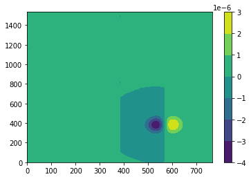
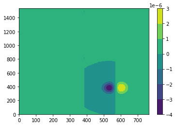
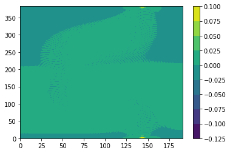
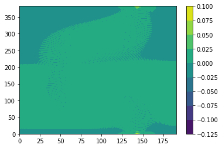

Contents
# Step 1: Install FFTW
!apt-get install libfftw3-dev
!apt-get install libfftw3-mpi-dev
# Step 2: Set paths for Dedalus installation
import os
os.environ['MPI_INCLUDE_PATH'] = "/usr/lib/x86_64-linux-gnu/openmpi/include"
os.environ['MPI_LIBRARY_PATH'] = "/usr/lib/x86_64-linux-gnu"
os.environ['FFTW_INCLUDE_PATH'] = "/usr/include"
os.environ['FFTW_LIBRARY_PATH'] = "/usr/lib/x86_64-linux-gnu"
# Step 3: Install Dedalus using pip
!pip3 install --no-cache http://github.com/dedalusproject/dedalus/zipball/d3/
/bin/bash: apt-get: command not found
/bin/bash: apt-get: command not found
Collecting http://github.com/dedalusproject/dedalus/zipball/d3/
Downloading http://github.com/dedalusproject/dedalus/zipball/d3/ (23.3MB)
?25l
0% | | 10kB 18.1MB/s eta 0:00:02
0% | | 20kB 549kB/s eta 0:00:43
0% | | 30kB 416kB/s eta 0:00:56
0% | | 40kB 506kB/s eta 0:00:46
0% | | 51kB 437kB/s eta 0:00:54
0% | | 61kB 399kB/s eta 0:00:59
0% | | 71kB 438kB/s eta 0:00:53
0% |▏ | 81kB 416kB/s eta 0:00:56
0% |▏ | 92kB 389kB/s eta 0:01:00
0% |▏ | 102kB 414kB/s eta 0:00:56
0% |▏ | 112kB 369kB/s eta 0:01:03
0% |▏ | 122kB 403kB/s eta 0:00:58
0% |▏ | 133kB 423kB/s eta 0:00:55
0% |▏ | 143kB 369kB/s eta 0:01:03
0% |▏ | 153kB 425kB/s eta 0:00:55
0% |▎ | 163kB 415kB/s eta 0:00:56
0% |▎ | 174kB 417kB/s eta 0:00:56
0% |▎ | 184kB 482kB/s eta 0:00:48
0% |▎ | 194kB 501kB/s eta 0:00:47
0% |▎ | 204kB 435kB/s eta 0:00:53
0% |▎ | 215kB 499kB/s eta 0:00:47
0% |▎ | 225kB 504kB/s eta 0:00:46
1% |▎ | 235kB 571kB/s eta 0:00:41
1% |▍ | 245kB 599kB/s eta 0:00:39
1% |▍ | 256kB 564kB/s eta 0:00:41
1% |▍ | 266kB 609kB/s eta 0:00:38
1% |▍ | 276kB 638kB/s eta 0:00:37
1% |▍ | 286kB 501kB/s eta 0:00:46
1% |▍ | 296kB 592kB/s eta 0:00:39
1% |▍ | 307kB 599kB/s eta 0:00:39
1% |▍ | 317kB 599kB/s eta 0:00:39
1% |▌ | 327kB 521kB/s eta 0:00:45
1% |▌ | 337kB 521kB/s eta 0:00:44
1% |▌ | 348kB 597kB/s eta 0:00:39
1% |▌ | 358kB 635kB/s eta 0:00:37
1% |▌ | 368kB 602kB/s eta 0:00:39
1% |▌ | 378kB 602kB/s eta 0:00:38
1% |▌ | 389kB 812kB/s eta 0:00:29
1% |▌ | 399kB 656kB/s eta 0:00:35
1% |▋ | 409kB 822kB/s eta 0:00:28
1% |▋ | 419kB 822kB/s eta 0:00:28
1% |▋ | 430kB 1.2MB/s eta 0:00:20
1% |▋ | 440kB 807kB/s eta 0:00:29
1% |▋ | 450kB 861kB/s eta 0:00:27
1% |▋ | 460kB 821kB/s eta 0:00:28
2% |▋ | 471kB 1.2MB/s eta 0:00:20
2% |▋ | 481kB 829kB/s eta 0:00:28
2% |▊ | 491kB 824kB/s eta 0:00:28
2% |▊ | 501kB 391kB/s eta 0:00:59
2% |▊ | 512kB 401kB/s eta 0:00:57
2% |▊ | 522kB 401kB/s eta 0:00:57
2% |▊ | 532kB 403kB/s eta 0:00:57
2% |▊ | 542kB 320kB/s eta 0:01:11
2% |▊ | 552kB 321kB/s eta 0:01:11
2% |▊ | 563kB 326kB/s eta 0:01:10
2% |▉ | 573kB 327kB/s eta 0:01:10
2% |▉ | 583kB 370kB/s eta 0:01:02
2% |▉ | 593kB 286kB/s eta 0:01:20
2% |▉ | 604kB 540kB/s eta 0:00:42
2% |▉ | 614kB 541kB/s eta 0:00:42
2% |▉ | 624kB 541kB/s eta 0:00:42
2% |▉ | 634kB 541kB/s eta 0:00:42
2% |▉ | 645kB 1.0MB/s eta 0:00:23
2% |█ | 655kB 817kB/s eta 0:00:28
2% |█ | 665kB 818kB/s eta 0:00:28
2% |█ | 675kB 706kB/s eta 0:00:32
2% |█ | 686kB 524kB/s eta 0:00:44
2% |█ | 696kB 898kB/s eta 0:00:26
3% |█ | 706kB 901kB/s eta 0:00:26
3% |█ | 716kB 902kB/s eta 0:00:25
3% |█ | 727kB 637kB/s eta 0:00:36
3% |█ | 737kB 635kB/s eta 0:00:36
3% |█ | 747kB 700kB/s eta 0:00:33
3% |█ | 757kB 624kB/s eta 0:00:37
3% |█ | 768kB 624kB/s eta 0:00:37
3% |█ | 778kB 710kB/s eta 0:00:32
3% |█ | 788kB 780kB/s eta 0:00:29
3% |█ | 798kB 782kB/s eta 0:00:29
3% |█▏ | 808kB 769kB/s eta 0:00:30
3% |█▏ | 819kB 593kB/s eta 0:00:38
3% |█▏ | 829kB 815kB/s eta 0:00:28
3% |█▏ | 839kB 820kB/s eta 0:00:28
3% |█▏ | 849kB 613kB/s eta 0:00:37
3% |█▏ | 860kB 825kB/s eta 0:00:28
3% |█▏ | 870kB 818kB/s eta 0:00:28
3% |█▏ | 880kB 818kB/s eta 0:00:28
3% |█▎ | 890kB 847kB/s eta 0:00:27
3% |█▎ | 901kB 789kB/s eta 0:00:29
3% |█▎ | 911kB 800kB/s eta 0:00:28
3% |█▎ | 921kB 862kB/s eta 0:00:26
4% |█▎ | 931kB 805kB/s eta 0:00:28
4% |█▎ | 942kB 803kB/s eta 0:00:28
4% |█▎ | 952kB 687kB/s eta 0:00:33
4% |█▎ | 962kB 687kB/s eta 0:00:33
4% |█▍ | 972kB 693kB/s eta 0:00:33
4% |█▍ | 983kB 331kB/s eta 0:01:08
4% |█▍ | 993kB 370kB/s eta 0:01:01
4% |█▍ | 1.0MB 382kB/s eta 0:00:59
4% |█▍ | 1.0MB 382kB/s eta 0:00:59
4% |█▍ | 1.0MB 431kB/s eta 0:00:52
4% |█▍ | 1.0MB 382kB/s eta 0:00:59
4% |█▍ | 1.0MB 382kB/s eta 0:00:59
4% |█▌ | 1.1MB 439kB/s eta 0:00:51
4% |█▌ | 1.1MB 339kB/s eta 0:01:06
4% |█▌ | 1.1MB 338kB/s eta 0:01:06
4% |█▌ | 1.1MB 583kB/s eta 0:00:39
4% |█▌ | 1.1MB 551kB/s eta 0:00:41
4% |█▌ | 1.1MB 551kB/s eta 0:00:41
4% |█▌ | 1.1MB 465kB/s eta 0:00:48
4% |█▌ | 1.1MB 464kB/s eta 0:00:48
4% |█▋ | 1.1MB 563kB/s eta 0:00:40
4% |█▋ | 1.1MB 436kB/s eta 0:00:51
4% |█▋ | 1.2MB 495kB/s eta 0:00:45
5% |█▋ | 1.2MB 743kB/s eta 0:00:30
5% |█▋ | 1.2MB 576kB/s eta 0:00:39
5% |█▋ | 1.2MB 708kB/s eta 0:00:32
5% |█▋ | 1.2MB 760kB/s eta 0:00:30
5% |█▋ | 1.2MB 761kB/s eta 0:00:29
5% |█▊ | 1.2MB 1.0MB/s eta 0:00:22
5% |█▊ | 1.2MB 437kB/s eta 0:00:51
5% |█▊ | 1.2MB 438kB/s eta 0:00:51
5% |█▊ | 1.2MB 568kB/s eta 0:00:39
5% |█▊ | 1.3MB 455kB/s eta 0:00:49
5% |█▊ | 1.3MB 455kB/s eta 0:00:49
5% |█▊ | 1.3MB 554kB/s eta 0:00:40
5% |█▊ | 1.3MB 557kB/s eta 0:00:40
5% |█▉ | 1.3MB 558kB/s eta 0:00:40
5% |█▉ | 1.3MB 458kB/s eta 0:00:48
5% |█▉ | 1.3MB 458kB/s eta 0:00:48
5% |█▉ | 1.3MB 1.1MB/s eta 0:00:20
5% |█▉ | 1.3MB 807kB/s eta 0:00:28
5% |█▉ | 1.4MB 805kB/s eta 0:00:28
5% |█▉ | 1.4MB 1.3MB/s eta 0:00:18
5% |█▉ | 1.4MB 1.3MB/s eta 0:00:18
5% |██ | 1.4MB 1.1MB/s eta 0:00:20
5% |██ | 1.4MB 809kB/s eta 0:00:28
6% |██ | 1.4MB 809kB/s eta 0:00:28
6% |██ | 1.4MB 705kB/s eta 0:00:31
6% |██ | 1.4MB 705kB/s eta 0:00:31
6% |██ | 1.4MB 707kB/s eta 0:00:31
6% |██ | 1.4MB 766kB/s eta 0:00:29
6% |██ | 1.5MB 768kB/s eta 0:00:29
6% |██ | 1.5MB 716kB/s eta 0:00:31
6% |██ | 1.5MB 700kB/s eta 0:00:32
6% |██ | 1.5MB 757kB/s eta 0:00:29
6% |██ | 1.5MB 712kB/s eta 0:00:31
6% |██ | 1.5MB 710kB/s eta 0:00:31
6% |██ | 1.5MB 1.2MB/s eta 0:00:19
6% |██ | 1.5MB 854kB/s eta 0:00:26
6% |██▏ | 1.5MB 853kB/s eta 0:00:26
6% |██▏ | 1.5MB 1.0MB/s eta 0:00:21
6% |██▏ | 1.6MB 1.0MB/s eta 0:00:22
6% |██▏ | 1.6MB 1.1MB/s eta 0:00:20
6% |██▏ | 1.6MB 859kB/s eta 0:00:26
6% |██▏ | 1.6MB 703kB/s eta 0:00:31
6% |██▏ | 1.6MB 994kB/s eta 0:00:22
6% |██▏ | 1.6MB 1.0MB/s eta 0:00:22
6% |██▎ | 1.6MB 1.0MB/s eta 0:00:22
6% |██▎ | 1.6MB 1.3MB/s eta 0:00:17
7% |██▎ | 1.6MB 920kB/s eta 0:00:24
7% |██▎ | 1.6MB 966kB/s eta 0:00:23
7% |██▎ | 1.7MB 984kB/s eta 0:00:22
7% |██▎ | 1.7MB 754kB/s eta 0:00:29
7% |██▎ | 1.7MB 980kB/s eta 0:00:23
7% |██▎ | 1.7MB 855kB/s eta 0:00:26
7% |██▍ | 1.7MB 855kB/s eta 0:00:26
7% |██▍ | 1.7MB 848kB/s eta 0:00:26
7% |██▍ | 1.7MB 667kB/s eta 0:00:33
7% |██▍ | 1.7MB 719kB/s eta 0:00:30
7% |██▍ | 1.7MB 725kB/s eta 0:00:30
7% |██▍ | 1.8MB 719kB/s eta 0:00:30
7% |██▍ | 1.8MB 719kB/s eta 0:00:30
7% |██▍ | 1.8MB 846kB/s eta 0:00:26
7% |██▌ | 1.8MB 846kB/s eta 0:00:26
7% |██▌ | 1.8MB 929kB/s eta 0:00:24
7% |██▌ | 1.8MB 929kB/s eta 0:00:24
7% |██▌ | 1.8MB 937kB/s eta 0:00:23
7% |██▌ | 1.8MB 1.1MB/s eta 0:00:19
7% |██▌ | 1.8MB 900kB/s eta 0:00:24
7% |██▌ | 1.8MB 1.2MB/s eta 0:00:18
7% |██▌ | 1.9MB 1.0MB/s eta 0:00:22
8% |██▋ | 1.9MB 1.0MB/s eta 0:00:22
8% |██▋ | 1.9MB 1.1MB/s eta 0:00:19
8% |██▋ | 1.9MB 906kB/s eta 0:00:24
8% |██▋ | 1.9MB 1.2MB/s eta 0:00:18
8% |██▋ | 1.9MB 917kB/s eta 0:00:24
8% |██▋ | 1.9MB 914kB/s eta 0:00:24
8% |██▋ | 1.9MB 1.0MB/s eta 0:00:21
8% |██▋ | 1.9MB 1.4MB/s eta 0:00:16
8% |██▊ | 1.9MB 1.4MB/s eta 0:00:16
8% |██▊ | 2.0MB 1.1MB/s eta 0:00:20
8% |██▊ | 2.0MB 1.0MB/s eta 0:00:21
8% |██▊ | 2.0MB 1.0MB/s eta 0:00:21
8% |██▊ | 2.0MB 1.3MB/s eta 0:00:17
8% |██▊ | 2.0MB 712kB/s eta 0:00:30
8% |██▊ | 2.0MB 882kB/s eta 0:00:25
8% |██▊ | 2.0MB 858kB/s eta 0:00:25
8% |██▉ | 2.0MB 851kB/s eta 0:00:25
8% |██▉ | 2.0MB 852kB/s eta 0:00:25
8% |██▉ | 2.0MB 851kB/s eta 0:00:25
8% |██▉ | 2.1MB 1.3MB/s eta 0:00:17
8% |██▉ | 2.1MB 952kB/s eta 0:00:23
8% |██▉ | 2.1MB 941kB/s eta 0:00:23
8% |██▉ | 2.1MB 941kB/s eta 0:00:23
9% |██▉ | 2.1MB 2.0MB/s eta 0:00:11
9% |███ | 2.1MB 2.1MB/s eta 0:00:11
9% |███ | 2.1MB 612kB/s eta 0:00:35
9% |███ | 2.1MB 615kB/s eta 0:00:35
9% |███ | 2.1MB 616kB/s eta 0:00:35
9% |███ | 2.2MB 617kB/s eta 0:00:35
9% |███ | 2.2MB 599kB/s eta 0:00:36
9% |███ | 2.2MB 743kB/s eta 0:00:29
9% |███ | 2.2MB 587kB/s eta 0:00:36
9% |███ | 2.2MB 586kB/s eta 0:00:36
9% |███ | 2.2MB 604kB/s eta 0:00:35
9% |███ | 2.2MB 600kB/s eta 0:00:36
9% |███ | 2.2MB 2.0MB/s eta 0:00:11
9% |███ | 2.2MB 580kB/s eta 0:00:37
9% |███ | 2.2MB 579kB/s eta 0:00:37
9% |███ | 2.3MB 579kB/s eta 0:00:37
9% |███▏ | 2.3MB 595kB/s eta 0:00:36
9% |███▏ | 2.3MB 595kB/s eta 0:00:36
9% |███▏ | 2.3MB 764kB/s eta 0:00:28
9% |███▏ | 2.3MB 765kB/s eta 0:00:28
9% |███▏ | 2.3MB 777kB/s eta 0:00:27
9% |███▏ | 2.3MB 782kB/s eta 0:00:27
9% |███▏ | 2.3MB 597kB/s eta 0:00:36
10% |███▏ | 2.3MB 2.3MB/s eta 0:00:10
10% |███▎ | 2.3MB 2.3MB/s eta 0:00:10
10% |███▎ | 2.4MB 2.3MB/s eta 0:00:10
10% |███▎ | 2.4MB 1.0MB/s eta 0:00:21
10% |███▎ | 2.4MB 1.0MB/s eta 0:00:21
10% |███▎ | 2.4MB 1.0MB/s eta 0:00:21
10% |███▎ | 2.4MB 1.0MB/s eta 0:00:21
10% |███▎ | 2.4MB 717kB/s eta 0:00:30
10% |███▎ | 2.4MB 717kB/s eta 0:00:30
10% |███▍ | 2.4MB 1.0MB/s eta 0:00:21
10% |███▍ | 2.4MB 1.0MB/s eta 0:00:21
10% |███▍ | 2.4MB 746kB/s eta 0:00:28
10% |███▍ | 2.5MB 711kB/s eta 0:00:30
10% |███▍ | 2.5MB 1.2MB/s eta 0:00:19
10% |███▍ | 2.5MB 1.1MB/s eta 0:00:19
10% |███▍ | 2.5MB 759kB/s eta 0:00:28
10% |███▍ | 2.5MB 757kB/s eta 0:00:28
10% |███▌ | 2.5MB 1.1MB/s eta 0:00:20
10% |███▌ | 2.5MB 1.1MB/s eta 0:00:20
10% |███▌ | 2.5MB 775kB/s eta 0:00:27
10% |███▌ | 2.5MB 774kB/s eta 0:00:27
10% |███▌ | 2.5MB 1.1MB/s eta 0:00:20
11% |███▌ | 2.6MB 1.1MB/s eta 0:00:19
11% |███▌ | 2.6MB 776kB/s eta 0:00:27
11% |███▌ | 2.6MB 782kB/s eta 0:00:27
11% |███▋ | 2.6MB 1.2MB/s eta 0:00:18
11% |███▋ | 2.6MB 1.2MB/s eta 0:00:18
11% |███▋ | 2.6MB 1.2MB/s eta 0:00:18
11% |███▋ | 2.6MB 845kB/s eta 0:00:25
11% |███▋ | 2.6MB 1.2MB/s eta 0:00:17
11% |███▋ | 2.6MB 1.1MB/s eta 0:00:20
11% |███▋ | 2.7MB 1.0MB/s eta 0:00:20
11% |███▋ | 2.7MB 1.1MB/s eta 0:00:20
11% |███▊ | 2.7MB 1.3MB/s eta 0:00:16
11% |███▊ | 2.7MB 905kB/s eta 0:00:23
11% |███▊ | 2.7MB 907kB/s eta 0:00:23
11% |███▊ | 2.7MB 907kB/s eta 0:00:23
11% |███▊ | 2.7MB 908kB/s eta 0:00:23
11% |███▊ | 2.7MB 973kB/s eta 0:00:22
11% |███▊ | 2.7MB 727kB/s eta 0:00:29
11% |███▊ | 2.7MB 805kB/s eta 0:00:26
11% |███▉ | 2.8MB 587kB/s eta 0:00:35
11% |███▉ | 2.8MB 586kB/s eta 0:00:35
11% |███▉ | 2.8MB 678kB/s eta 0:00:31
11% |███▉ | 2.8MB 896kB/s eta 0:00:23
12% |███▉ | 2.8MB 899kB/s eta 0:00:23
12% |███▉ | 2.8MB 899kB/s eta 0:00:23
12% |███▉ | 2.8MB 677kB/s eta 0:00:31
12% |███▉ | 2.8MB 831kB/s eta 0:00:25
12% |████ | 2.8MB 1.2MB/s eta 0:00:18
12% |████ | 2.8MB 811kB/s eta 0:00:26
12% |████ | 2.9MB 1.3MB/s eta 0:00:16
12% |████ | 2.9MB 971kB/s eta 0:00:21
12% |████ | 2.9MB 968kB/s eta 0:00:22
12% |████ | 2.9MB 858kB/s eta 0:00:24
12% |████ | 2.9MB 695kB/s eta 0:00:30
12% |████ | 2.9MB 693kB/s eta 0:00:30
12% |████ | 2.9MB 841kB/s eta 0:00:25
12% |████ | 2.9MB 672kB/s eta 0:00:31
12% |████ | 2.9MB 676kB/s eta 0:00:31
12% |████ | 2.9MB 419kB/s eta 0:00:49
12% |████ | 3.0MB 419kB/s eta 0:00:49
12% |████ | 3.0MB 469kB/s eta 0:00:44
12% |████ | 3.0MB 397kB/s eta 0:00:52
12% |████▏ | 3.0MB 419kB/s eta 0:00:49
12% |████▏ | 3.0MB 472kB/s eta 0:00:43
12% |████▏ | 3.0MB 401kB/s eta 0:00:51
12% |████▏ | 3.0MB 418kB/s eta 0:00:49
13% |████▏ | 3.0MB 478kB/s eta 0:00:43
13% |████▏ | 3.0MB 479kB/s eta 0:00:43
13% |████▏ | 3.1MB 1.2MB/s eta 0:00:18
13% |████▏ | 3.1MB 808kB/s eta 0:00:25
13% |████▎ | 3.1MB 810kB/s eta 0:00:25
13% |████▎ | 3.1MB 1.2MB/s eta 0:00:18
13% |████▎ | 3.1MB 780kB/s eta 0:00:26
13% |████▎ | 3.1MB 781kB/s eta 0:00:26
13% |████▎ | 3.1MB 1.1MB/s eta 0:00:19
13% |████▎ | 3.1MB 1.1MB/s eta 0:00:19
13% |████▎ | 3.1MB 673kB/s eta 0:00:30
13% |████▎ | 3.1MB 671kB/s eta 0:00:30
13% |████▍ | 3.2MB 699kB/s eta 0:00:29
13% |████▍ | 3.2MB 942kB/s eta 0:00:22
13% |████▍ | 3.2MB 686kB/s eta 0:00:30
13% |████▍ | 3.2MB 685kB/s eta 0:00:30
13% |████▍ | 3.2MB 966kB/s eta 0:00:21
13% |████▍ | 3.2MB 967kB/s eta 0:00:21
13% |████▍ | 3.2MB 488kB/s eta 0:00:42
13% |████▍ | 3.2MB 488kB/s eta 0:00:41
13% |████▌ | 3.2MB 680kB/s eta 0:00:30
13% |████▌ | 3.2MB 681kB/s eta 0:00:30
13% |████▌ | 3.3MB 681kB/s eta 0:00:30
14% |████▌ | 3.3MB 681kB/s eta 0:00:30
14% |████▌ | 3.3MB 553kB/s eta 0:00:37
14% |████▌ | 3.3MB 553kB/s eta 0:00:37
14% |████▌ | 3.3MB 558kB/s eta 0:00:36
14% |████▌ | 3.3MB 459kB/s eta 0:00:44
14% |████▋ | 3.3MB 868kB/s eta 0:00:23
14% |████▋ | 3.3MB 853kB/s eta 0:00:24
14% |████▋ | 3.3MB 611kB/s eta 0:00:33
14% |████▋ | 3.3MB 610kB/s eta 0:00:33
14% |████▋ | 3.4MB 607kB/s eta 0:00:33
14% |████▋ | 3.4MB 607kB/s eta 0:00:33
14% |████▋ | 3.4MB 776kB/s eta 0:00:26
14% |████▋ | 3.4MB 773kB/s eta 0:00:26
14% |████▊ | 3.4MB 773kB/s eta 0:00:26
14% |████▊ | 3.4MB 775kB/s eta 0:00:26
14% |████▊ | 3.4MB 765kB/s eta 0:00:26
14% |████▊ | 3.4MB 777kB/s eta 0:00:26
14% |████▊ | 3.4MB 713kB/s eta 0:00:28
14% |████▊ | 3.5MB 715kB/s eta 0:00:28
14% |████▊ | 3.5MB 719kB/s eta 0:00:28
14% |████▊ | 3.5MB 532kB/s eta 0:00:38
14% |████▉ | 3.5MB 664kB/s eta 0:00:30
15% |████▉ | 3.5MB 657kB/s eta 0:00:31
15% |████▉ | 3.5MB 491kB/s eta 0:00:41
15% |████▉ | 3.5MB 600kB/s eta 0:00:33
15% |████▉ | 3.5MB 605kB/s eta 0:00:33
15% |████▉ | 3.5MB 605kB/s eta 0:00:33
15% |████▉ | 3.5MB 691kB/s eta 0:00:29
15% |████▉ | 3.6MB 689kB/s eta 0:00:29
15% |█████ | 3.6MB 687kB/s eta 0:00:29
15% |█████ | 3.6MB 587kB/s eta 0:00:34
15% |█████ | 3.6MB 587kB/s eta 0:00:34
15% |█████ | 3.6MB 595kB/s eta 0:00:34
15% |█████ | 3.6MB 685kB/s eta 0:00:29
15% |█████ | 3.6MB 689kB/s eta 0:00:29
15% |█████ | 3.6MB 417kB/s eta 0:00:47
15% |█████ | 3.6MB 416kB/s eta 0:00:48
15% |█████ | 3.6MB 493kB/s eta 0:00:40
15% |█████ | 3.7MB 399kB/s eta 0:00:50
15% |█████ | 3.7MB 399kB/s eta 0:00:50
15% |█████ | 3.7MB 565kB/s eta 0:00:35
15% |█████ | 3.7MB 204kB/s eta 0:01:36
15% |█████ | 3.7MB 204kB/s eta 0:01:36
15% |█████ | 3.7MB 217kB/s eta 0:01:31
15% |█████▏ | 3.7MB 217kB/s eta 0:01:30
16% |█████▏ | 3.7MB 273kB/s eta 0:01:12
16% |█████▏ | 3.7MB 240kB/s eta 0:01:22
16% |█████▏ | 3.7MB 240kB/s eta 0:01:22
16% |█████▏ | 3.8MB 271kB/s eta 0:01:12
16% |█████▏ | 3.8MB 245kB/s eta 0:01:20
16% |█████▏ | 3.8MB 244kB/s eta 0:01:20
16% |█████▏ | 3.8MB 1.0MB/s eta 0:00:20
16% |█████▎ | 3.8MB 947kB/s eta 0:00:21
16% |█████▎ | 3.8MB 945kB/s eta 0:00:21
16% |█████▎ | 3.8MB 631kB/s eta 0:00:31
16% |█████▎ | 3.8MB 564kB/s eta 0:00:35
16% |█████▎ | 3.8MB 791kB/s eta 0:00:25
16% |█████▎ | 3.9MB 365kB/s eta 0:00:54
16% |█████▎ | 3.9MB 365kB/s eta 0:00:54
16% |█████▎ | 3.9MB 428kB/s eta 0:00:46
16% |█████▍ | 3.9MB 428kB/s eta 0:00:46
16% |█████▍ | 3.9MB 433kB/s eta 0:00:45
16% |█████▍ | 3.9MB 338kB/s eta 0:00:58
16% |█████▍ | 3.9MB 338kB/s eta 0:00:58
16% |█████▍ | 3.9MB 411kB/s eta 0:00:48
16% |█████▍ | 3.9MB 366kB/s eta 0:00:53
16% |█████▍ | 3.9MB 366kB/s eta 0:00:53
16% |█████▍ | 4.0MB 777kB/s eta 0:00:25
17% |█████▌ | 4.0MB 779kB/s eta 0:00:25
17% |█████▌ | 4.0MB 780kB/s eta 0:00:25
17% |█████▌ | 4.0MB 491kB/s eta 0:00:40
17% |█████▌ | 4.0MB 486kB/s eta 0:00:40
17% |█████▌ | 4.0MB 750kB/s eta 0:00:26
17% |█████▌ | 4.0MB 272kB/s eta 0:01:11
17% |█████▌ | 4.0MB 272kB/s eta 0:01:11
17% |█████▌ | 4.0MB 313kB/s eta 0:01:02
17% |█████▋ | 4.0MB 313kB/s eta 0:01:02
17% |█████▋ | 4.1MB 317kB/s eta 0:01:01
17% |█████▋ | 4.1MB 317kB/s eta 0:01:01
17% |█████▋ | 4.1MB 307kB/s eta 0:01:03
17% |█████▋ | 4.1MB 399kB/s eta 0:00:49
17% |█████▋ | 4.1MB 355kB/s eta 0:00:54
17% |█████▋ | 4.1MB 355kB/s eta 0:00:54
17% |█████▋ | 4.1MB 2.0MB/s eta 0:00:10
17% |█████▊ | 4.1MB 1.2MB/s eta 0:00:17
17% |█████▊ | 4.1MB 1.2MB/s eta 0:00:17
17% |█████▊ | 4.1MB 1.1MB/s eta 0:00:19
17% |█████▊ | 4.2MB 660kB/s eta 0:00:29
17% |█████▊ | 4.2MB 659kB/s eta 0:00:29
17% |█████▊ | 4.2MB 710kB/s eta 0:00:27
18% |█████▊ | 4.2MB 711kB/s eta 0:00:27
18% |█████▊ | 4.2MB 444kB/s eta 0:00:43
18% |█████▉ | 4.2MB 445kB/s eta 0:00:43
18% |█████▉ | 4.2MB 453kB/s eta 0:00:43
18% |█████▉ | 4.2MB 440kB/s eta 0:00:44
18% |█████▉ | 4.2MB 433kB/s eta 0:00:44
18% |█████▉ | 4.2MB 453kB/s eta 0:00:42
18% |█████▉ | 4.3MB 506kB/s eta 0:00:38
18% |█████▉ | 4.3MB 506kB/s eta 0:00:38
18% |█████▉ | 4.3MB 441kB/s eta 0:00:44
18% |██████ | 4.3MB 384kB/s eta 0:00:50
18% |██████ | 4.3MB 698kB/s eta 0:00:28
18% |██████ | 4.3MB 650kB/s eta 0:00:30
18% |██████ | 4.3MB 621kB/s eta 0:00:31
18% |██████ | 4.3MB 825kB/s eta 0:00:23
18% |██████ | 4.3MB 582kB/s eta 0:00:33
18% |██████ | 4.4MB 582kB/s eta 0:00:33
18% |██████ | 4.4MB 521kB/s eta 0:00:37
18% |██████ | 4.4MB 518kB/s eta 0:00:37
18% |██████ | 4.4MB 610kB/s eta 0:00:31
18% |██████ | 4.4MB 760kB/s eta 0:00:25
18% |██████ | 4.4MB 491kB/s eta 0:00:39
18% |██████ | 4.4MB 519kB/s eta 0:00:37
19% |██████ | 4.4MB 539kB/s eta 0:00:35
19% |██████ | 4.4MB 539kB/s eta 0:00:35
19% |██████▏ | 4.4MB 578kB/s eta 0:00:33
19% |██████▏ | 4.5MB 578kB/s eta 0:00:33
19% |██████▏ | 4.5MB 839kB/s eta 0:00:23
19% |██████▏ | 4.5MB 507kB/s eta 0:00:38
19% |██████▏ | 4.5MB 503kB/s eta 0:00:38
19% |██████▏ | 4.5MB 505kB/s eta 0:00:38
19% |██████▏ | 4.5MB 794kB/s eta 0:00:24
19% |██████▏ | 4.5MB 795kB/s eta 0:00:24
19% |██████▎ | 4.5MB 270kB/s eta 0:01:10
19% |██████▎ | 4.5MB 270kB/s eta 0:01:10
19% |██████▎ | 4.5MB 304kB/s eta 0:01:02
19% |██████▎ | 4.6MB 296kB/s eta 0:01:04
19% |██████▎ | 4.6MB 246kB/s eta 0:01:16
19% |██████▎ | 4.6MB 305kB/s eta 0:01:02
19% |██████▎ | 4.6MB 307kB/s eta 0:01:01
19% |██████▎ | 4.6MB 307kB/s eta 0:01:01
19% |██████▍ | 4.6MB 241kB/s eta 0:01:18
19% |██████▍ | 4.6MB 176kB/s eta 0:01:46
19% |██████▍ | 4.6MB 309kB/s eta 0:01:01
19% |██████▍ | 4.6MB 289kB/s eta 0:01:05
19% |██████▍ | 4.6MB 201kB/s eta 0:01:33
20% |██████▍ | 4.7MB 205kB/s eta 0:01:31
20% |██████▍ | 4.7MB 235kB/s eta 0:01:19
20% |██████▍ | 4.7MB 236kB/s eta 0:01:19
20% |██████▌ | 4.7MB 211kB/s eta 0:01:28
20% |██████▌ | 4.7MB 211kB/s eta 0:01:28
20% |██████▌ | 4.7MB 260kB/s eta 0:01:12
20% |██████▌ | 4.7MB 320kB/s eta 0:00:58
20% |██████▌ | 4.7MB 320kB/s eta 0:00:58
20% |██████▌ | 4.7MB 344kB/s eta 0:00:54
20% |██████▌ | 4.8MB 567kB/s eta 0:00:33
20% |██████▌ | 4.8MB 568kB/s eta 0:00:33
20% |██████▋ | 4.8MB 585kB/s eta 0:00:32
20% |██████▋ | 4.8MB 425kB/s eta 0:00:44
20% |██████▋ | 4.8MB 535kB/s eta 0:00:35
20% |██████▋ | 4.8MB 537kB/s eta 0:00:35
20% |██████▋ | 4.8MB 450kB/s eta 0:00:41
20% |██████▋ | 4.8MB 704kB/s eta 0:00:27
20% |██████▋ | 4.8MB 703kB/s eta 0:00:27
20% |██████▋ | 4.8MB 560kB/s eta 0:00:33
20% |██████▊ | 4.9MB 706kB/s eta 0:00:27
20% |██████▊ | 4.9MB 664kB/s eta 0:00:28
20% |██████▊ | 4.9MB 664kB/s eta 0:00:28
20% |██████▊ | 4.9MB 872kB/s eta 0:00:22
21% |██████▊ | 4.9MB 815kB/s eta 0:00:23
21% |██████▊ | 4.9MB 814kB/s eta 0:00:23
21% |██████▊ | 4.9MB 566kB/s eta 0:00:33
21% |██████▊ | 4.9MB 469kB/s eta 0:00:40
21% |██████▉ | 4.9MB 470kB/s eta 0:00:39
21% |██████▉ | 4.9MB 559kB/s eta 0:00:33
21% |██████▉ | 5.0MB 559kB/s eta 0:00:33
21% |██████▉ | 5.0MB 478kB/s eta 0:00:39
21% |██████▉ | 5.0MB 476kB/s eta 0:00:39
21% |██████▉ | 5.0MB 552kB/s eta 0:00:34
21% |██████▉ | 5.0MB 470kB/s eta 0:00:39
21% |██████▉ | 5.0MB 453kB/s eta 0:00:41
21% |███████ | 5.0MB 765kB/s eta 0:00:24
21% |███████ | 5.0MB 989kB/s eta 0:00:19
21% |███████ | 5.0MB 988kB/s eta 0:00:19
21% |███████ | 5.0MB 663kB/s eta 0:00:28
21% |███████ | 5.1MB 661kB/s eta 0:00:28
21% |███████ | 5.1MB 897kB/s eta 0:00:21
21% |███████ | 5.1MB 674kB/s eta 0:00:27
21% |███████ | 5.1MB 672kB/s eta 0:00:28
21% |███████ | 5.1MB 916kB/s eta 0:00:20
21% |███████ | 5.1MB 717kB/s eta 0:00:26
22% |███████ | 5.1MB 716kB/s eta 0:00:26
22% |███████ | 5.1MB 635kB/s eta 0:00:29
22% |███████ | 5.1MB 616kB/s eta 0:00:30
22% |███████ | 5.2MB 911kB/s eta 0:00:20
22% |███████ | 5.2MB 687kB/s eta 0:00:27
22% |███████▏ | 5.2MB 687kB/s eta 0:00:27
22% |███████▏ | 5.2MB 926kB/s eta 0:00:20
22% |███████▏ | 5.2MB 711kB/s eta 0:00:26
22% |███████▏ | 5.2MB 713kB/s eta 0:00:26
22% |███████▏ | 5.2MB 686kB/s eta 0:00:27
22% |███████▏ | 5.2MB 685kB/s eta 0:00:27
22% |███████▏ | 5.2MB 823kB/s eta 0:00:22
22% |███████▏ | 5.2MB 686kB/s eta 0:00:27
22% |███████▎ | 5.3MB 644kB/s eta 0:00:28
22% |███████▎ | 5.3MB 841kB/s eta 0:00:22
22% |███████▎ | 5.3MB 814kB/s eta 0:00:23
22% |███████▎ | 5.3MB 812kB/s eta 0:00:23
22% |███████▎ | 5.3MB 676kB/s eta 0:00:27
22% |███████▎ | 5.3MB 673kB/s eta 0:00:27
22% |███████▎ | 5.3MB 955kB/s eta 0:00:19
22% |███████▎ | 5.3MB 957kB/s eta 0:00:19
22% |███████▍ | 5.3MB 697kB/s eta 0:00:26
22% |███████▍ | 5.3MB 878kB/s eta 0:00:21
23% |███████▍ | 5.4MB 953kB/s eta 0:00:19
23% |███████▍ | 5.4MB 953kB/s eta 0:00:19
23% |███████▍ | 5.4MB 728kB/s eta 0:00:25
23% |███████▍ | 5.4MB 602kB/s eta 0:00:30
23% |███████▍ | 5.4MB 921kB/s eta 0:00:20
23% |███████▍ | 5.4MB 925kB/s eta 0:00:20
23% |███████▌ | 5.4MB 699kB/s eta 0:00:26
23% |███████▌ | 5.4MB 697kB/s eta 0:00:26
23% |███████▌ | 5.4MB 885kB/s eta 0:00:21
23% |███████▌ | 5.4MB 885kB/s eta 0:00:21
23% |███████▌ | 5.5MB 886kB/s eta 0:00:21
23% |███████▌ | 5.5MB 712kB/s eta 0:00:25
23% |███████▌ | 5.5MB 957kB/s eta 0:00:19
23% |███████▌ | 5.5MB 835kB/s eta 0:00:22
23% |███████▋ | 5.5MB 835kB/s eta 0:00:22
23% |███████▋ | 5.5MB 835kB/s eta 0:00:22
23% |███████▋ | 5.5MB 808kB/s eta 0:00:22
23% |███████▋ | 5.5MB 808kB/s eta 0:00:22
23% |███████▋ | 5.5MB 867kB/s eta 0:00:21
23% |███████▋ | 5.6MB 865kB/s eta 0:00:21
23% |███████▋ | 5.6MB 866kB/s eta 0:00:21
23% |███████▋ | 5.6MB 683kB/s eta 0:00:26
23% |███████▊ | 5.6MB 684kB/s eta 0:00:26
24% |███████▊ | 5.6MB 981kB/s eta 0:00:19
24% |███████▊ | 5.6MB 985kB/s eta 0:00:18
24% |███████▊ | 5.6MB 987kB/s eta 0:00:18
24% |███████▊ | 5.6MB 992kB/s eta 0:00:18
24% |███████▊ | 5.6MB 991kB/s eta 0:00:18
24% |███████▊ | 5.6MB 991kB/s eta 0:00:18
24% |███████▊ | 5.7MB 993kB/s eta 0:00:18
24% |███████▉ | 5.7MB 426kB/s eta 0:00:42
24% |███████▉ | 5.7MB 567kB/s eta 0:00:32
24% |███████▉ | 5.7MB 565kB/s eta 0:00:32
24% |███████▉ | 5.7MB 565kB/s eta 0:00:32
24% |███████▉ | 5.7MB 563kB/s eta 0:00:32
24% |███████▉ | 5.7MB 446kB/s eta 0:00:40
24% |███████▉ | 5.7MB 537kB/s eta 0:00:33
24% |███████▉ | 5.7MB 539kB/s eta 0:00:33
24% |████████ | 5.7MB 538kB/s eta 0:00:33
24% |████████ | 5.8MB 539kB/s eta 0:00:33
24% |████████ | 5.8MB 1.1MB/s eta 0:00:16
24% |████████ | 5.8MB 1.1MB/s eta 0:00:16
24% |████████ | 5.8MB 1.1MB/s eta 0:00:16
24% |████████ | 5.8MB 1.0MB/s eta 0:00:17
24% |████████ | 5.8MB 1.1MB/s eta 0:00:17
24% |████████ | 5.8MB 925kB/s eta 0:00:19
25% |████████ | 5.8MB 916kB/s eta 0:00:20
25% |████████ | 5.8MB 917kB/s eta 0:00:19
25% |████████ | 5.8MB 897kB/s eta 0:00:20
25% |████████ | 5.9MB 897kB/s eta 0:00:20
25% |████████ | 5.9MB 913kB/s eta 0:00:20
25% |████████ | 5.9MB 874kB/s eta 0:00:20
25% |████████ | 5.9MB 875kB/s eta 0:00:20
25% |████████▏ | 5.9MB 938kB/s eta 0:00:19
25% |████████▏ | 5.9MB 591kB/s eta 0:00:30
25% |████████▏ | 5.9MB 907kB/s eta 0:00:20
25% |████████▏ | 5.9MB 887kB/s eta 0:00:20
25% |████████▏ | 5.9MB 886kB/s eta 0:00:20
25% |████████▏ | 5.9MB 904kB/s eta 0:00:20
25% |████████▏ | 6.0MB 675kB/s eta 0:00:26
25% |████████▏ | 6.0MB 883kB/s eta 0:00:20
25% |████████▎ | 6.0MB 873kB/s eta 0:00:20
25% |████████▎ | 6.0MB 859kB/s eta 0:00:21
25% |████████▎ | 6.0MB 857kB/s eta 0:00:21
25% |████████▎ | 6.0MB 1.8MB/s eta 0:00:10
25% |████████▎ | 6.0MB 1.9MB/s eta 0:00:10
25% |████████▎ | 6.0MB 1.0MB/s eta 0:00:17
25% |████████▎ | 6.0MB 1.0MB/s eta 0:00:17
26% |████████▎ | 6.1MB 1.0MB/s eta 0:00:17
26% |████████▍ | 6.1MB 1.6MB/s eta 0:00:11
26% |████████▍ | 6.1MB 971kB/s eta 0:00:18
26% |████████▍ | 6.1MB 1.0MB/s eta 0:00:17
26% |████████▍ | 6.1MB 1.1MB/s eta 0:00:17
26% |████████▍ | 6.1MB 1.1MB/s eta 0:00:17
26% |████████▍ | 6.1MB 1.0MB/s eta 0:00:17
26% |████████▍ | 6.1MB 617kB/s eta 0:00:28
26% |████████▍ | 6.1MB 879kB/s eta 0:00:20
26% |████████▌ | 6.1MB 881kB/s eta 0:00:20
26% |████████▌ | 6.2MB 881kB/s eta 0:00:20
26% |████████▌ | 6.2MB 897kB/s eta 0:00:20
26% |████████▌ | 6.2MB 1.4MB/s eta 0:00:13
26% |████████▌ | 6.2MB 1.4MB/s eta 0:00:13
26% |████████▌ | 6.2MB 941kB/s eta 0:00:19
26% |████████▌ | 6.2MB 920kB/s eta 0:00:19
26% |████████▌ | 6.2MB 951kB/s eta 0:00:18
26% |████████▋ | 6.2MB 738kB/s eta 0:00:24
26% |████████▋ | 6.2MB 739kB/s eta 0:00:24
26% |████████▋ | 6.2MB 739kB/s eta 0:00:24
26% |████████▋ | 6.3MB 580kB/s eta 0:00:30
26% |████████▋ | 6.3MB 578kB/s eta 0:00:30
26% |████████▋ | 6.3MB 578kB/s eta 0:00:30
27% |████████▋ | 6.3MB 564kB/s eta 0:00:31
27% |████████▋ | 6.3MB 703kB/s eta 0:00:25
27% |████████▊ | 6.3MB 563kB/s eta 0:00:31
27% |████████▊ | 6.3MB 561kB/s eta 0:00:31
27% |████████▊ | 6.3MB 1.2MB/s eta 0:00:15
27% |████████▊ | 6.3MB 834kB/s eta 0:00:21
27% |████████▊ | 6.3MB 831kB/s eta 0:00:21
27% |████████▊ | 6.4MB 1.2MB/s eta 0:00:15
27% |████████▊ | 6.4MB 1.1MB/s eta 0:00:16
27% |████████▊ | 6.4MB 1.1MB/s eta 0:00:16
27% |████████▉ | 6.4MB 857kB/s eta 0:00:20
27% |████████▉ | 6.4MB 684kB/s eta 0:00:25
27% |████████▉ | 6.4MB 920kB/s eta 0:00:19
27% |████████▉ | 6.4MB 926kB/s eta 0:00:19
27% |████████▉ | 6.4MB 928kB/s eta 0:00:19
27% |████████▉ | 6.4MB 1.3MB/s eta 0:00:14
27% |████████▉ | 6.5MB 782kB/s eta 0:00:22
27% |████████▉ | 6.5MB 781kB/s eta 0:00:22
27% |█████████ | 6.5MB 838kB/s eta 0:00:21
27% |█████████ | 6.5MB 837kB/s eta 0:00:21
27% |█████████ | 6.5MB 1.1MB/s eta 0:00:16
27% |█████████ | 6.5MB 897kB/s eta 0:00:19
27% |█████████ | 6.5MB 896kB/s eta 0:00:19
28% |█████████ | 6.5MB 894kB/s eta 0:00:19
28% |█████████ | 6.5MB 396kB/s eta 0:00:43
28% |█████████ | 6.5MB 409kB/s eta 0:00:41
28% |█████████ | 6.6MB 511kB/s eta 0:00:33
28% |█████████ | 6.6MB 512kB/s eta 0:00:33
28% |█████████ | 6.6MB 512kB/s eta 0:00:33
28% |█████████ | 6.6MB 394kB/s eta 0:00:43
28% |█████████ | 6.6MB 394kB/s eta 0:00:43
28% |█████████ | 6.6MB 494kB/s eta 0:00:34
28% |█████████ | 6.6MB 495kB/s eta 0:00:34
28% |█████████▏ | 6.6MB 496kB/s eta 0:00:34
28% |█████████▏ | 6.6MB 1.0MB/s eta 0:00:17
28% |█████████▏ | 6.6MB 987kB/s eta 0:00:17
28% |█████████▏ | 6.7MB 986kB/s eta 0:00:17
28% |█████████▏ | 6.7MB 729kB/s eta 0:00:23
28% |█████████▏ | 6.7MB 728kB/s eta 0:00:23
28% |█████████▏ | 6.7MB 1.3MB/s eta 0:00:14
28% |█████████▏ | 6.7MB 795kB/s eta 0:00:21
28% |█████████▎ | 6.7MB 794kB/s eta 0:00:21
28% |█████████▎ | 6.7MB 795kB/s eta 0:00:21
28% |█████████▎ | 6.7MB 608kB/s eta 0:00:28
28% |█████████▎ | 6.7MB 788kB/s eta 0:00:21
29% |█████████▎ | 6.7MB 790kB/s eta 0:00:21
29% |█████████▎ | 6.8MB 790kB/s eta 0:00:21
29% |█████████▎ | 6.8MB 777kB/s eta 0:00:22
29% |█████████▎ | 6.8MB 759kB/s eta 0:00:22
29% |█████████▍ | 6.8MB 768kB/s eta 0:00:22
29% |█████████▍ | 6.8MB 693kB/s eta 0:00:24
29% |█████████▍ | 6.8MB 691kB/s eta 0:00:24
29% |█████████▍ | 6.8MB 691kB/s eta 0:00:24
29% |█████████▍ | 6.8MB 688kB/s eta 0:00:24
29% |█████████▍ | 6.8MB 689kB/s eta 0:00:24
29% |█████████▍ | 6.9MB 700kB/s eta 0:00:24
29% |█████████▍ | 6.9MB 672kB/s eta 0:00:25
29% |█████████▌ | 6.9MB 902kB/s eta 0:00:19
29% |█████████▌ | 6.9MB 555kB/s eta 0:00:30
29% |█████████▌ | 6.9MB 553kB/s eta 0:00:30
29% |█████████▌ | 6.9MB 826kB/s eta 0:00:20
29% |█████████▌ | 6.9MB 518kB/s eta 0:00:32
29% |█████████▌ | 6.9MB 518kB/s eta 0:00:32
29% |█████████▌ | 6.9MB 650kB/s eta 0:00:26
29% |█████████▌ | 6.9MB 527kB/s eta 0:00:31
29% |█████████▋ | 7.0MB 525kB/s eta 0:00:32
29% |█████████▋ | 7.0MB 516kB/s eta 0:00:32
29% |█████████▋ | 7.0MB 391kB/s eta 0:00:42
30% |█████████▋ | 7.0MB 544kB/s eta 0:00:30
30% |█████████▋ | 7.0MB 449kB/s eta 0:00:37
30% |█████████▋ | 7.0MB 449kB/s eta 0:00:37
30% |█████████▋ | 7.0MB 665kB/s eta 0:00:25
30% |█████████▋ | 7.0MB 447kB/s eta 0:00:37
30% |█████████▊ | 7.0MB 447kB/s eta 0:00:37
30% |█████████▊ | 7.0MB 534kB/s eta 0:00:31
30% |█████████▊ | 7.1MB 445kB/s eta 0:00:37
30% |█████████▊ | 7.1MB 464kB/s eta 0:00:35
30% |█████████▊ | 7.1MB 578kB/s eta 0:00:28
30% |█████████▊ | 7.1MB 468kB/s eta 0:00:35
30% |█████████▊ | 7.1MB 563kB/s eta 0:00:29
30% |█████████▊ | 7.1MB 470kB/s eta 0:00:35
30% |█████████▉ | 7.1MB 469kB/s eta 0:00:35
30% |█████████▉ | 7.1MB 710kB/s eta 0:00:23
30% |█████████▉ | 7.1MB 409kB/s eta 0:00:40
30% |█████████▉ | 7.1MB 409kB/s eta 0:00:40
30% |█████████▉ | 7.2MB 483kB/s eta 0:00:34
30% |█████████▉ | 7.2MB 412kB/s eta 0:00:39
30% |█████████▉ | 7.2MB 448kB/s eta 0:00:36
30% |█████████▉ | 7.2MB 542kB/s eta 0:00:30
30% |██████████ | 7.2MB 551kB/s eta 0:00:30
30% |██████████ | 7.2MB 332kB/s eta 0:00:49
31% |██████████ | 7.2MB 331kB/s eta 0:00:49
31% |██████████ | 7.2MB 332kB/s eta 0:00:49
31% |██████████ | 7.2MB 427kB/s eta 0:00:38
31% |██████████ | 7.2MB 426kB/s eta 0:00:38
31% |██████████ | 7.3MB 427kB/s eta 0:00:38
31% |██████████ | 7.3MB 373kB/s eta 0:00:43
31% |██████████ | 7.3MB 372kB/s eta 0:00:43
31% |██████████ | 7.3MB 376kB/s eta 0:00:43
31% |██████████ | 7.3MB 328kB/s eta 0:00:49
31% |██████████ | 7.3MB 669kB/s eta 0:00:24
31% |██████████ | 7.3MB 662kB/s eta 0:00:25
31% |██████████ | 7.3MB 490kB/s eta 0:00:33
31% |██████████ | 7.3MB 596kB/s eta 0:00:27
31% |██████████▏ | 7.4MB 599kB/s eta 0:00:27
31% |██████████▏ | 7.4MB 599kB/s eta 0:00:27
31% |██████████▏ | 7.4MB 750kB/s eta 0:00:22
31% |██████████▏ | 7.4MB 717kB/s eta 0:00:23
31% |██████████▏ | 7.4MB 717kB/s eta 0:00:23
31% |██████████▏ | 7.4MB 744kB/s eta 0:00:22
31% |██████████▏ | 7.4MB 608kB/s eta 0:00:27
31% |██████████▏ | 7.4MB 615kB/s eta 0:00:26
31% |██████████▎ | 7.4MB 900kB/s eta 0:00:18
31% |██████████▎ | 7.4MB 902kB/s eta 0:00:18
32% |██████████▎ | 7.5MB 690kB/s eta 0:00:23
32% |██████████▎ | 7.5MB 661kB/s eta 0:00:24
32% |██████████▎ | 7.5MB 865kB/s eta 0:00:19
32% |██████████▎ | 7.5MB 724kB/s eta 0:00:22
32% |██████████▎ | 7.5MB 708kB/s eta 0:00:23
32% |██████████▎ | 7.5MB 932kB/s eta 0:00:17
32% |██████████▍ | 7.5MB 878kB/s eta 0:00:18
32% |██████████▍ | 7.5MB 878kB/s eta 0:00:18
32% |██████████▍ | 7.5MB 887kB/s eta 0:00:18
32% |██████████▍ | 7.5MB 682kB/s eta 0:00:24
32% |██████████▍ | 7.6MB 889kB/s eta 0:00:18
32% |██████████▍ | 7.6MB 890kB/s eta 0:00:18
32% |██████████▍ | 7.6MB 709kB/s eta 0:00:23
32% |██████████▍ | 7.6MB 889kB/s eta 0:00:18
32% |██████████▌ | 7.6MB 684kB/s eta 0:00:23
32% |██████████▌ | 7.6MB 683kB/s eta 0:00:23
32% |██████████▌ | 7.6MB 911kB/s eta 0:00:18
32% |██████████▌ | 7.6MB 679kB/s eta 0:00:24
32% |██████████▌ | 7.6MB 661kB/s eta 0:00:24
32% |██████████▌ | 7.6MB 851kB/s eta 0:00:19
32% |██████████▌ | 7.7MB 672kB/s eta 0:00:24
32% |██████████▌ | 7.7MB 701kB/s eta 0:00:23
33% |██████████▋ | 7.7MB 699kB/s eta 0:00:23
33% |██████████▋ | 7.7MB 700kB/s eta 0:00:23
33% |██████████▋ | 7.7MB 942kB/s eta 0:00:17
33% |██████████▋ | 7.7MB 828kB/s eta 0:00:19
33% |██████████▋ | 7.7MB 828kB/s eta 0:00:19
33% |██████████▋ | 7.7MB 924kB/s eta 0:00:17
33% |██████████▋ | 7.7MB 835kB/s eta 0:00:19
33% |██████████▋ | 7.8MB 834kB/s eta 0:00:19
33% |██████████▊ | 7.8MB 948kB/s eta 0:00:17
33% |██████████▊ | 7.8MB 948kB/s eta 0:00:17
33% |██████████▊ | 7.8MB 548kB/s eta 0:00:29
33% |██████████▊ | 7.8MB 548kB/s eta 0:00:29
33% |██████████▊ | 7.8MB 549kB/s eta 0:00:29
33% |██████████▊ | 7.8MB 482kB/s eta 0:00:33
33% |██████████▊ | 7.8MB 475kB/s eta 0:00:33
33% |██████████▊ | 7.8MB 539kB/s eta 0:00:29
33% |██████████▉ | 7.8MB 592kB/s eta 0:00:27
33% |██████████▉ | 7.9MB 592kB/s eta 0:00:26
33% |██████████▉ | 7.9MB 499kB/s eta 0:00:31
33% |██████████▉ | 7.9MB 499kB/s eta 0:00:31
33% |██████████▉ | 7.9MB 1.1MB/s eta 0:00:15
33% |██████████▉ | 7.9MB 1.1MB/s eta 0:00:15
33% |██████████▉ | 7.9MB 684kB/s eta 0:00:23
34% |██████████▉ | 7.9MB 943kB/s eta 0:00:17
34% |███████████ | 7.9MB 970kB/s eta 0:00:16
34% |███████████ | 7.9MB 972kB/s eta 0:00:16
34% |███████████ | 7.9MB 659kB/s eta 0:00:24
34% |███████████ | 8.0MB 658kB/s eta 0:00:24
34% |███████████ | 8.0MB 968kB/s eta 0:00:16
34% |███████████ | 8.0MB 801kB/s eta 0:00:20
34% |███████████ | 8.0MB 580kB/s eta 0:00:27
34% |███████████ | 8.0MB 580kB/s eta 0:00:27
34% |███████████ | 8.0MB 833kB/s eta 0:00:19
34% |███████████ | 8.0MB 834kB/s eta 0:00:19
34% |███████████ | 8.0MB 834kB/s eta 0:00:19
34% |███████████ | 8.0MB 629kB/s eta 0:00:25
34% |███████████ | 8.0MB 905kB/s eta 0:00:17
34% |███████████ | 8.1MB 823kB/s eta 0:00:19
34% |███████████ | 8.1MB 821kB/s eta 0:00:19
34% |███████████▏ | 8.1MB 999kB/s eta 0:00:16
34% |███████████▏ | 8.1MB 933kB/s eta 0:00:17
34% |███████████▏ | 8.1MB 933kB/s eta 0:00:17
34% |███████████▏ | 8.1MB 920kB/s eta 0:00:17
34% |███████████▏ | 8.1MB 918kB/s eta 0:00:17
34% |███████████▏ | 8.1MB 917kB/s eta 0:00:17
34% |███████████▏ | 8.1MB 944kB/s eta 0:00:17
35% |███████████▏ | 8.2MB 931kB/s eta 0:00:17
35% |███████████▎ | 8.2MB 1.0MB/s eta 0:00:15
35% |███████████▎ | 8.2MB 1.0MB/s eta 0:00:15
35% |███████████▎ | 8.2MB 1.0MB/s eta 0:00:15
35% |███████████▎ | 8.2MB 873kB/s eta 0:00:18
35% |███████████▎ | 8.2MB 868kB/s eta 0:00:18
35% |███████████▎ | 8.2MB 880kB/s eta 0:00:18
35% |███████████▎ | 8.2MB 859kB/s eta 0:00:18
35% |███████████▎ | 8.2MB 434kB/s eta 0:00:35
35% |███████████▍ | 8.2MB 513kB/s eta 0:00:30
35% |███████████▍ | 8.3MB 517kB/s eta 0:00:30
35% |███████████▍ | 8.3MB 517kB/s eta 0:00:30
35% |███████████▍ | 8.3MB 520kB/s eta 0:00:29
35% |███████████▍ | 8.3MB 430kB/s eta 0:00:35
35% |███████████▍ | 8.3MB 620kB/s eta 0:00:25
35% |███████████▍ | 8.3MB 566kB/s eta 0:00:27
35% |███████████▍ | 8.3MB 565kB/s eta 0:00:27
35% |███████████▌ | 8.3MB 574kB/s eta 0:00:26
35% |███████████▌ | 8.3MB 1.1MB/s eta 0:00:14
35% |███████████▌ | 8.3MB 1.1MB/s eta 0:00:14
35% |███████████▌ | 8.4MB 986kB/s eta 0:00:16
35% |███████████▌ | 8.4MB 832kB/s eta 0:00:18
36% |███████████▌ | 8.4MB 833kB/s eta 0:00:18
36% |███████████▌ | 8.4MB 1.1MB/s eta 0:00:14
36% |███████████▌ | 8.4MB 991kB/s eta 0:00:15
36% |███████████▋ | 8.4MB 1.2MB/s eta 0:00:13
36% |███████████▋ | 8.4MB 958kB/s eta 0:00:16
36% |███████████▋ | 8.4MB 953kB/s eta 0:00:16
36% |███████████▋ | 8.4MB 1.2MB/s eta 0:00:13
36% |███████████▋ | 8.4MB 849kB/s eta 0:00:18
36% |███████████▋ | 8.5MB 949kB/s eta 0:00:16
36% |███████████▋ | 8.5MB 1.2MB/s eta 0:00:13
36% |███████████▋ | 8.5MB 1.2MB/s eta 0:00:13
36% |███████████▊ | 8.5MB 1.3MB/s eta 0:00:12
36% |███████████▊ | 8.5MB 987kB/s eta 0:00:15
36% |███████████▊ | 8.5MB 984kB/s eta 0:00:15
36% |███████████▊ | 8.5MB 1.2MB/s eta 0:00:13
36% |███████████▊ | 8.5MB 1.1MB/s eta 0:00:14
36% |███████████▊ | 8.5MB 1.2MB/s eta 0:00:13
36% |███████████▊ | 8.6MB 2.1MB/s eta 0:00:07
36% |███████████▊ | 8.6MB 939kB/s eta 0:00:16
36% |███████████▉ | 8.6MB 938kB/s eta 0:00:16
36% |███████████▉ | 8.6MB 939kB/s eta 0:00:16
36% |███████████▉ | 8.6MB 939kB/s eta 0:00:16
36% |███████████▉ | 8.6MB 1.4MB/s eta 0:00:11
37% |███████████▉ | 8.6MB 572kB/s eta 0:00:26
37% |███████████▉ | 8.6MB 583kB/s eta 0:00:26
37% |███████████▉ | 8.6MB 584kB/s eta 0:00:26
37% |███████████▉ | 8.6MB 583kB/s eta 0:00:26
37% |████████████ | 8.7MB 583kB/s eta 0:00:26
37% |████████████ | 8.7MB 582kB/s eta 0:00:26
37% |████████████ | 8.7MB 583kB/s eta 0:00:26
37% |████████████ | 8.7MB 583kB/s eta 0:00:25
37% |████████████ | 8.7MB 583kB/s eta 0:00:25
37% |████████████ | 8.7MB 584kB/s eta 0:00:25
37% |████████████ | 8.7MB 1.5MB/s eta 0:00:10
37% |████████████ | 8.7MB 930kB/s eta 0:00:16
37% |████████████ | 8.7MB 959kB/s eta 0:00:16
37% |████████████ | 8.7MB 962kB/s eta 0:00:16
37% |████████████ | 8.8MB 963kB/s eta 0:00:16
37% |████████████ | 8.8MB 1.2MB/s eta 0:00:12
37% |████████████ | 8.8MB 1.2MB/s eta 0:00:12
37% |████████████ | 8.8MB 1.2MB/s eta 0:00:12
37% |████████████ | 8.8MB 1.2MB/s eta 0:00:12
37% |████████████▏ | 8.8MB 652kB/s eta 0:00:23
37% |████████████▏ | 8.8MB 648kB/s eta 0:00:23
37% |████████████▏ | 8.8MB 880kB/s eta 0:00:17
37% |████████████▏ | 8.8MB 883kB/s eta 0:00:17
38% |████████████▏ | 8.8MB 671kB/s eta 0:00:22
38% |████████████▏ | 8.9MB 641kB/s eta 0:00:23
38% |████████████▏ | 8.9MB 851kB/s eta 0:00:17
38% |████████████▏ | 8.9MB 677kB/s eta 0:00:22
38% |████████████▎ | 8.9MB 651kB/s eta 0:00:23
38% |████████████▎ | 8.9MB 651kB/s eta 0:00:23
38% |████████████▎ | 8.9MB 732kB/s eta 0:00:20
38% |████████████▎ | 8.9MB 735kB/s eta 0:00:20
38% |████████████▎ | 8.9MB 735kB/s eta 0:00:20
38% |████████████▎ | 8.9MB 571kB/s eta 0:00:26
38% |████████████▎ | 8.9MB 716kB/s eta 0:00:20
38% |████████████▎ | 9.0MB 579kB/s eta 0:00:25
38% |████████████▍ | 9.0MB 578kB/s eta 0:00:25
38% |████████████▍ | 9.0MB 702kB/s eta 0:00:21
38% |████████████▍ | 9.0MB 567kB/s eta 0:00:26
38% |████████████▍ | 9.0MB 566kB/s eta 0:00:26
38% |████████████▍ | 9.0MB 813kB/s eta 0:00:18
38% |████████████▍ | 9.0MB 616kB/s eta 0:00:24
38% |████████████▍ | 9.0MB 616kB/s eta 0:00:24
38% |████████████▍ | 9.0MB 647kB/s eta 0:00:22
38% |████████████▌ | 9.1MB 551kB/s eta 0:00:26
38% |████████████▌ | 9.1MB 705kB/s eta 0:00:21
38% |████████████▌ | 9.1MB 652kB/s eta 0:00:22
39% |████████████▌ | 9.1MB 652kB/s eta 0:00:22
39% |████████████▌ | 9.1MB 704kB/s eta 0:00:21
39% |████████████▌ | 9.1MB 565kB/s eta 0:00:26
39% |████████████▌ | 9.1MB 564kB/s eta 0:00:26
39% |████████████▌ | 9.1MB 696kB/s eta 0:00:21
39% |████████████▋ | 9.1MB 570kB/s eta 0:00:25
39% |████████████▋ | 9.1MB 691kB/s eta 0:00:21
39% |████████████▋ | 9.2MB 821kB/s eta 0:00:18
39% |████████████▋ | 9.2MB 639kB/s eta 0:00:23
39% |████████████▋ | 9.2MB 690kB/s eta 0:00:21
39% |████████████▋ | 9.2MB 680kB/s eta 0:00:21
39% |████████████▋ | 9.2MB 842kB/s eta 0:00:17
39% |████████████▋ | 9.2MB 821kB/s eta 0:00:18
39% |████████████▊ | 9.2MB 684kB/s eta 0:00:21
39% |████████████▊ | 9.2MB 713kB/s eta 0:00:20
39% |████████████▊ | 9.2MB 835kB/s eta 0:00:17
39% |████████████▊ | 9.2MB 536kB/s eta 0:00:27
39% |████████████▊ | 9.3MB 548kB/s eta 0:00:26
39% |████████████▊ | 9.3MB 679kB/s eta 0:00:21
39% |████████████▊ | 9.3MB 681kB/s eta 0:00:21
39% |████████████▊ | 9.3MB 551kB/s eta 0:00:26
39% |████████████▉ | 9.3MB 537kB/s eta 0:00:26
40% |████████████▉ | 9.3MB 677kB/s eta 0:00:21
40% |████████████▉ | 9.3MB 461kB/s eta 0:00:31
40% |████████████▉ | 9.3MB 459kB/s eta 0:00:31
40% |████████████▉ | 9.3MB 485kB/s eta 0:00:29
40% |████████████▉ | 9.3MB 719kB/s eta 0:00:20
40% |████████████▉ | 9.4MB 722kB/s eta 0:00:20
40% |████████████▉ | 9.4MB 549kB/s eta 0:00:26
40% |█████████████ | 9.4MB 548kB/s eta 0:00:26
40% |█████████████ | 9.4MB 687kB/s eta 0:00:21
40% |█████████████ | 9.4MB 564kB/s eta 0:00:25
40% |█████████████ | 9.4MB 477kB/s eta 0:00:30
40% |█████████████ | 9.4MB 861kB/s eta 0:00:17
40% |█████████████ | 9.4MB 850kB/s eta 0:00:17
40% |█████████████ | 9.4MB 849kB/s eta 0:00:17
40% |█████████████ | 9.5MB 780kB/s eta 0:00:18
40% |█████████████ | 9.5MB 537kB/s eta 0:00:26
40% |█████████████ | 9.5MB 699kB/s eta 0:00:20
40% |█████████████ | 9.5MB 700kB/s eta 0:00:20
40% |█████████████ | 9.5MB 677kB/s eta 0:00:21
40% |█████████████ | 9.5MB 898kB/s eta 0:00:16
40% |█████████████ | 9.5MB 885kB/s eta 0:00:16
40% |█████████████ | 9.5MB 887kB/s eta 0:00:16
40% |█████████████▏ | 9.5MB 893kB/s eta 0:00:16
41% |█████████████▏ | 9.5MB 678kB/s eta 0:00:21
41% |█████████████▏ | 9.6MB 726kB/s eta 0:00:19
41% |█████████████▏ | 9.6MB 1.2MB/s eta 0:00:12
41% |█████████████▏ | 9.6MB 916kB/s eta 0:00:15
41% |█████████████▏ | 9.6MB 914kB/s eta 0:00:15
41% |█████████████▏ | 9.6MB 693kB/s eta 0:00:20
41% |█████████████▏ | 9.6MB 692kB/s eta 0:00:20
41% |█████████████▎ | 9.6MB 908kB/s eta 0:00:16
41% |█████████████▎ | 9.6MB 691kB/s eta 0:00:20
41% |█████████████▎ | 9.6MB 699kB/s eta 0:00:20
41% |█████████████▎ | 9.6MB 898kB/s eta 0:00:16
41% |█████████████▎ | 9.7MB 724kB/s eta 0:00:19
41% |█████████████▎ | 9.7MB 739kB/s eta 0:00:19
41% |█████████████▎ | 9.7MB 840kB/s eta 0:00:17
41% |█████████████▎ | 9.7MB 842kB/s eta 0:00:17
41% |█████████████▍ | 9.7MB 941kB/s eta 0:00:15
41% |█████████████▍ | 9.7MB 936kB/s eta 0:00:15
41% |█████████████▍ | 9.7MB 935kB/s eta 0:00:15
41% |█████████████▍ | 9.7MB 948kB/s eta 0:00:15
41% |█████████████▍ | 9.7MB 929kB/s eta 0:00:15
41% |█████████████▍ | 9.7MB 966kB/s eta 0:00:14
41% |█████████████▍ | 9.8MB 1.2MB/s eta 0:00:12
41% |█████████████▍ | 9.8MB 1.2MB/s eta 0:00:12
42% |█████████████▌ | 9.8MB 824kB/s eta 0:00:17
42% |█████████████▌ | 9.8MB 822kB/s eta 0:00:17
42% |█████████████▌ | 9.8MB 1.1MB/s eta 0:00:13
42% |█████████████▌ | 9.8MB 1.1MB/s eta 0:00:13
42% |█████████████▌ | 9.8MB 731kB/s eta 0:00:19
42% |█████████████▌ | 9.8MB 960kB/s eta 0:00:14
42% |█████████████▌ | 9.8MB 981kB/s eta 0:00:14
42% |█████████████▌ | 9.9MB 980kB/s eta 0:00:14
42% |█████████████▋ | 9.9MB 715kB/s eta 0:00:19
42% |█████████████▋ | 9.9MB 569kB/s eta 0:00:24
42% |█████████████▋ | 9.9MB 761kB/s eta 0:00:18
42% |█████████████▋ | 9.9MB 763kB/s eta 0:00:18
42% |█████████████▋ | 9.9MB 762kB/s eta 0:00:18
42% |█████████████▋ | 9.9MB 762kB/s eta 0:00:18
42% |█████████████▋ | 9.9MB 662kB/s eta 0:00:21
42% |█████████████▋ | 9.9MB 662kB/s eta 0:00:21
42% |█████████████▊ | 9.9MB 663kB/s eta 0:00:21
42% |█████████████▊ | 10.0MB 529kB/s eta 0:00:26
42% |█████████████▊ | 10.0MB 709kB/s eta 0:00:19
42% |█████████████▊ | 10.0MB 955kB/s eta 0:00:14
42% |█████████████▊ | 10.0MB 949kB/s eta 0:00:14
42% |█████████████▊ | 10.0MB 948kB/s eta 0:00:14
43% |█████████████▊ | 10.0MB 531kB/s eta 0:00:25
43% |█████████████▊ | 10.0MB 531kB/s eta 0:00:25
43% |█████████████▉ | 10.0MB 799kB/s eta 0:00:17
43% |█████████████▉ | 10.0MB 615kB/s eta 0:00:22
43% |█████████████▉ | 10.0MB 613kB/s eta 0:00:22
43% |█████████████▉ | 10.1MB 787kB/s eta 0:00:17
43% |█████████████▉ | 10.1MB 788kB/s eta 0:00:17
43% |█████████████▉ | 10.1MB 787kB/s eta 0:00:17
43% |█████████████▉ | 10.1MB 393kB/s eta 0:00:34
43% |█████████████▉ | 10.1MB 393kB/s eta 0:00:34
43% |██████████████ | 10.1MB 583kB/s eta 0:00:23
43% |██████████████ | 10.1MB 479kB/s eta 0:00:28
43% |██████████████ | 10.1MB 478kB/s eta 0:00:28
43% |██████████████ | 10.1MB 582kB/s eta 0:00:23
43% |██████████████ | 10.1MB 415kB/s eta 0:00:32
43% |██████████████ | 10.2MB 418kB/s eta 0:00:32
43% |██████████████ | 10.2MB 419kB/s eta 0:00:32
43% |██████████████ | 10.2MB 419kB/s eta 0:00:32
43% |██████████████ | 10.2MB 637kB/s eta 0:00:21
43% |██████████████ | 10.2MB 510kB/s eta 0:00:26
43% |██████████████ | 10.2MB 509kB/s eta 0:00:26
43% |██████████████ | 10.2MB 629kB/s eta 0:00:21
43% |██████████████ | 10.2MB 631kB/s eta 0:00:21
44% |██████████████ | 10.2MB 632kB/s eta 0:00:21
44% |██████████████ | 10.3MB 517kB/s eta 0:00:26
44% |██████████████▏ | 10.3MB 514kB/s eta 0:00:26
44% |██████████████▏ | 10.3MB 513kB/s eta 0:00:26
44% |██████████████▏ | 10.3MB 513kB/s eta 0:00:26
44% |██████████████▏ | 10.3MB 674kB/s eta 0:00:20
44% |██████████████▏ | 10.3MB 552kB/s eta 0:00:24
44% |██████████████▏ | 10.3MB 455kB/s eta 0:00:29
44% |██████████████▏ | 10.3MB 454kB/s eta 0:00:29
44% |██████████████▏ | 10.3MB 360kB/s eta 0:00:36
44% |██████████████▎ | 10.3MB 359kB/s eta 0:00:36
44% |██████████████▎ | 10.4MB 430kB/s eta 0:00:31
44% |██████████████▎ | 10.4MB 432kB/s eta 0:00:30
44% |██████████████▎ | 10.4MB 433kB/s eta 0:00:30
44% |██████████████▎ | 10.4MB 351kB/s eta 0:00:37
44% |██████████████▎ | 10.4MB 306kB/s eta 0:00:43
44% |██████████████▎ | 10.4MB 392kB/s eta 0:00:33
44% |██████████████▎ | 10.4MB 462kB/s eta 0:00:28
44% |██████████████▍ | 10.4MB 463kB/s eta 0:00:28
44% |██████████████▍ | 10.4MB 408kB/s eta 0:00:32
44% |██████████████▍ | 10.4MB 353kB/s eta 0:00:37
44% |██████████████▍ | 10.5MB 447kB/s eta 0:00:29
44% |██████████████▍ | 10.5MB 445kB/s eta 0:00:29
45% |██████████████▍ | 10.5MB 372kB/s eta 0:00:35
45% |██████████████▍ | 10.5MB 464kB/s eta 0:00:28
45% |██████████████▍ | 10.5MB 577kB/s eta 0:00:23
45% |██████████████▌ | 10.5MB 578kB/s eta 0:00:23
45% |██████████████▌ | 10.5MB 467kB/s eta 0:00:28
45% |██████████████▌ | 10.5MB 353kB/s eta 0:00:37
45% |██████████████▌ | 10.5MB 508kB/s eta 0:00:26
45% |██████████████▌ | 10.5MB 632kB/s eta 0:00:21
45% |██████████████▌ | 10.6MB 383kB/s eta 0:00:34
45% |██████████████▌ | 10.6MB 384kB/s eta 0:00:34
45% |██████████████▌ | 10.6MB 456kB/s eta 0:00:28
45% |██████████████▋ | 10.6MB 457kB/s eta 0:00:28
45% |██████████████▋ | 10.6MB 383kB/s eta 0:00:34
45% |██████████████▋ | 10.6MB 382kB/s eta 0:00:34
45% |██████████████▋ | 10.6MB 454kB/s eta 0:00:28
45% |██████████████▋ | 10.6MB 530kB/s eta 0:00:24
45% |██████████████▋ | 10.6MB 419kB/s eta 0:00:31
45% |██████████████▋ | 10.6MB 418kB/s eta 0:00:31
45% |██████████████▋ | 10.7MB 734kB/s eta 0:00:18
45% |██████████████▊ | 10.7MB 736kB/s eta 0:00:18
45% |██████████████▊ | 10.7MB 573kB/s eta 0:00:22
45% |██████████████▊ | 10.7MB 564kB/s eta 0:00:23
45% |██████████████▊ | 10.7MB 740kB/s eta 0:00:17
46% |██████████████▊ | 10.7MB 572kB/s eta 0:00:22
46% |██████████████▊ | 10.7MB 467kB/s eta 0:00:27
46% |██████████████▊ | 10.7MB 567kB/s eta 0:00:23
46% |██████████████▊ | 10.7MB 767kB/s eta 0:00:17
46% |██████████████▉ | 10.8MB 769kB/s eta 0:00:17
46% |██████████████▉ | 10.8MB 511kB/s eta 0:00:25
46% |██████████████▉ | 10.8MB 510kB/s eta 0:00:25
46% |██████████████▉ | 10.8MB 645kB/s eta 0:00:20
46% |██████████████▉ | 10.8MB 525kB/s eta 0:00:24
46% |██████████████▉ | 10.8MB 524kB/s eta 0:00:24
46% |██████████████▉ | 10.8MB 662kB/s eta 0:00:19
46% |██████████████▉ | 10.8MB 813kB/s eta 0:00:16
46% |███████████████ | 10.8MB 813kB/s eta 0:00:16
46% |███████████████ | 10.8MB 563kB/s eta 0:00:23
46% |███████████████ | 10.9MB 562kB/s eta 0:00:23
46% |███████████████ | 10.9MB 893kB/s eta 0:00:14
46% |███████████████ | 10.9MB 649kB/s eta 0:00:20
46% |███████████████ | 10.9MB 638kB/s eta 0:00:20
46% |███████████████ | 10.9MB 845kB/s eta 0:00:15
46% |███████████████ | 10.9MB 467kB/s eta 0:00:27
46% |███████████████ | 10.9MB 466kB/s eta 0:00:27
46% |███████████████ | 10.9MB 491kB/s eta 0:00:26
47% |███████████████ | 10.9MB 360kB/s eta 0:00:35
47% |███████████████ | 10.9MB 455kB/s eta 0:00:28
47% |███████████████ | 11.0MB 457kB/s eta 0:00:27
47% |███████████████ | 11.0MB 389kB/s eta 0:00:32
47% |███████████████ | 11.0MB 465kB/s eta 0:00:27
47% |███████████████▏ | 11.0MB 468kB/s eta 0:00:27
47% |███████████████▏ | 11.0MB 468kB/s eta 0:00:27
47% |███████████████▏ | 11.0MB 652kB/s eta 0:00:19
47% |███████████████▏ | 11.0MB 513kB/s eta 0:00:24
47% |███████████████▏ | 11.0MB 512kB/s eta 0:00:24
47% |███████████████▏ | 11.0MB 693kB/s eta 0:00:18
47% |███████████████▏ | 11.0MB 538kB/s eta 0:00:23
47% |███████████████▏ | 11.1MB 538kB/s eta 0:00:23
47% |███████████████▎ | 11.1MB 628kB/s eta 0:00:20
47% |███████████████▎ | 11.1MB 629kB/s eta 0:00:20
47% |███████████████▎ | 11.1MB 513kB/s eta 0:00:24
47% |███████████████▎ | 11.1MB 512kB/s eta 0:00:24
47% |███████████████▎ | 11.1MB 627kB/s eta 0:00:20
47% |███████████████▎ | 11.1MB 649kB/s eta 0:00:19
47% |███████████████▎ | 11.1MB 414kB/s eta 0:00:30
47% |███████████████▎ | 11.1MB 458kB/s eta 0:00:27
47% |███████████████▍ | 11.2MB 468kB/s eta 0:00:26
47% |███████████████▍ | 11.2MB 467kB/s eta 0:00:26
48% |███████████████▍ | 11.2MB 417kB/s eta 0:00:29
48% |███████████████▍ | 11.2MB 360kB/s eta 0:00:34
48% |███████████████▍ | 11.2MB 416kB/s eta 0:00:30
48% |███████████████▍ | 11.2MB 416kB/s eta 0:00:29
48% |███████████████▍ | 11.2MB 359kB/s eta 0:00:34
48% |███████████████▍ | 11.2MB 412kB/s eta 0:00:30
48% |███████████████▌ | 11.2MB 546kB/s eta 0:00:23
48% |███████████████▌ | 11.2MB 546kB/s eta 0:00:23
48% |███████████████▌ | 11.3MB 542kB/s eta 0:00:23
48% |███████████████▌ | 11.3MB 531kB/s eta 0:00:23
48% |███████████████▌ | 11.3MB 660kB/s eta 0:00:19
48% |███████████████▌ | 11.3MB 644kB/s eta 0:00:19
48% |███████████████▌ | 11.3MB 549kB/s eta 0:00:22
48% |███████████████▌ | 11.3MB 548kB/s eta 0:00:22
48% |███████████████▋ | 11.3MB 558kB/s eta 0:00:22
48% |███████████████▋ | 11.3MB 548kB/s eta 0:00:22
48% |███████████████▋ | 11.3MB 650kB/s eta 0:00:19
48% |███████████████▋ | 11.3MB 527kB/s eta 0:00:23
48% |███████████████▋ | 11.4MB 661kB/s eta 0:00:18
48% |███████████████▋ | 11.4MB 679kB/s eta 0:00:18
48% |███████████████▋ | 11.4MB 546kB/s eta 0:00:22
48% |███████████████▋ | 11.4MB 707kB/s eta 0:00:17
48% |███████████████▊ | 11.4MB 615kB/s eta 0:00:20
49% |███████████████▊ | 11.4MB 461kB/s eta 0:00:26
49% |███████████████▊ | 11.4MB 550kB/s eta 0:00:22
49% |███████████████▊ | 11.4MB 561kB/s eta 0:00:22
49% |███████████████▊ | 11.4MB 561kB/s eta 0:00:22
49% |███████████████▊ | 11.4MB 544kB/s eta 0:00:22
49% |███████████████▊ | 11.5MB 536kB/s eta 0:00:23
49% |███████████████▊ | 11.5MB 536kB/s eta 0:00:22
49% |███████████████▉ | 11.5MB 454kB/s eta 0:00:26
49% |███████████████▉ | 11.5MB 390kB/s eta 0:00:31
49% |███████████████▉ | 11.5MB 481kB/s eta 0:00:25
49% |███████████████▉ | 11.5MB 621kB/s eta 0:00:19
49% |███████████████▉ | 11.5MB 623kB/s eta 0:00:19
49% |███████████████▉ | 11.5MB 452kB/s eta 0:00:26
49% |███████████████▉ | 11.5MB 451kB/s eta 0:00:26
49% |███████████████▉ | 11.6MB 556kB/s eta 0:00:22
49% |████████████████ | 11.6MB 461kB/s eta 0:00:26
49% |████████████████ | 11.6MB 388kB/s eta 0:00:31
49% |████████████████ | 11.6MB 532kB/s eta 0:00:22
49% |████████████████ | 11.6MB 658kB/s eta 0:00:18
49% |████████████████ | 11.6MB 659kB/s eta 0:00:18
49% |████████████████ | 11.6MB 481kB/s eta 0:00:25
49% |████████████████ | 11.6MB 480kB/s eta 0:00:25
49% |████████████████ | 11.6MB 677kB/s eta 0:00:18
50% |████████████████ | 11.6MB 341kB/s eta 0:00:34
50% |████████████████ | 11.7MB 341kB/s eta 0:00:35
50% |████████████████ | 11.7MB 395kB/s eta 0:00:30
50% |████████████████ | 11.7MB 391kB/s eta 0:00:30
50% |████████████████ | 11.7MB 391kB/s eta 0:00:30
50% |████████████████ | 11.7MB 391kB/s eta 0:00:30
50% |████████████████ | 11.7MB 340kB/s eta 0:00:34
50% |████████████████▏ | 11.7MB 433kB/s eta 0:00:27
50% |████████████████▏ | 11.7MB 345kB/s eta 0:00:34
50% |████████████████▏ | 11.7MB 345kB/s eta 0:00:34
50% |████████████████▏ | 11.7MB 692kB/s eta 0:00:17
50% |████████████████▏ | 11.8MB 547kB/s eta 0:00:22
50% |████████████████▏ | 11.8MB 544kB/s eta 0:00:22
50% |████████████████▏ | 11.8MB 711kB/s eta 0:00:17
50% |████████████████▏ | 11.8MB 400kB/s eta 0:00:29
50% |████████████████▎ | 11.8MB 399kB/s eta 0:00:29
50% |████████████████▎ | 11.8MB 471kB/s eta 0:00:25
50% |████████████████▎ | 11.8MB 472kB/s eta 0:00:25
50% |████████████████▎ | 11.8MB 655kB/s eta 0:00:18
50% |████████████████▎ | 11.8MB 512kB/s eta 0:00:23
50% |████████████████▎ | 11.8MB 511kB/s eta 0:00:23
50% |████████████████▎ | 11.9MB 334kB/s eta 0:00:35
51% |████████████████▎ | 11.9MB 334kB/s eta 0:00:35
51% |████████████████▍ | 11.9MB 334kB/s eta 0:00:35
51% |████████████████▍ | 11.9MB 426kB/s eta 0:00:27
51% |████████████████▍ | 11.9MB 351kB/s eta 0:00:33
51% |████████████████▍ | 11.9MB 351kB/s eta 0:00:33
51% |████████████████▍ | 11.9MB 347kB/s eta 0:00:33
51% |████████████████▍ | 11.9MB 348kB/s eta 0:00:33
51% |████████████████▍ | 11.9MB 345kB/s eta 0:00:33
51% |████████████████▍ | 12.0MB 277kB/s eta 0:00:41
51% |████████████████▌ | 12.0MB 458kB/s eta 0:00:25
51% |████████████████▌ | 12.0MB 459kB/s eta 0:00:25
51% |████████████████▌ | 12.0MB 391kB/s eta 0:00:29
51% |████████████████▌ | 12.0MB 475kB/s eta 0:00:24
51% |████████████████▌ | 12.0MB 606kB/s eta 0:00:19
51% |████████████████▌ | 12.0MB 607kB/s eta 0:00:19
51% |████████████████▌ | 12.0MB 456kB/s eta 0:00:25
51% |████████████████▌ | 12.0MB 334kB/s eta 0:00:34
51% |████████████████▋ | 12.0MB 393kB/s eta 0:00:29
51% |████████████████▋ | 12.1MB 544kB/s eta 0:00:21
51% |████████████████▋ | 12.1MB 304kB/s eta 0:00:37
51% |████████████████▋ | 12.1MB 303kB/s eta 0:00:37
51% |████████████████▋ | 12.1MB 342kB/s eta 0:00:33
51% |████████████████▋ | 12.1MB 343kB/s eta 0:00:33
52% |████████████████▋ | 12.1MB 231kB/s eta 0:00:49
52% |████████████████▋ | 12.1MB 201kB/s eta 0:00:56
52% |████████████████▊ | 12.1MB 228kB/s eta 0:00:49
52% |████████████████▊ | 12.1MB 278kB/s eta 0:00:40
52% |████████████████▊ | 12.1MB 252kB/s eta 0:00:44
52% |████████████████▊ | 12.2MB 252kB/s eta 0:00:44
52% |████████████████▊ | 12.2MB 399kB/s eta 0:00:28
52% |████████████████▊ | 12.2MB 400kB/s eta 0:00:28
52% |████████████████▊ | 12.2MB 346kB/s eta 0:00:32
52% |████████████████▊ | 12.2MB 346kB/s eta 0:00:32
52% |████████████████▉ | 12.2MB 694kB/s eta 0:00:16
52% |████████████████▉ | 12.2MB 694kB/s eta 0:00:16
52% |████████████████▉ | 12.2MB 692kB/s eta 0:00:16
52% |████████████████▉ | 12.2MB 692kB/s eta 0:00:16
52% |████████████████▉ | 12.2MB 688kB/s eta 0:00:16
52% |████████████████▉ | 12.3MB 689kB/s eta 0:00:16
52% |████████████████▉ | 12.3MB 667kB/s eta 0:00:17
52% |████████████████▉ | 12.3MB 547kB/s eta 0:00:21
52% |█████████████████ | 12.3MB 695kB/s eta 0:00:16
52% |█████████████████ | 12.3MB 571kB/s eta 0:00:20
52% |█████████████████ | 12.3MB 552kB/s eta 0:00:20
52% |█████████████████ | 12.3MB 853kB/s eta 0:00:13
52% |█████████████████ | 12.3MB 649kB/s eta 0:00:17
53% |█████████████████ | 12.3MB 650kB/s eta 0:00:17
53% |█████████████████ | 12.3MB 665kB/s eta 0:00:17
53% |█████████████████ | 12.4MB 534kB/s eta 0:00:21
53% |█████████████████ | 12.4MB 548kB/s eta 0:00:20
53% |█████████████████ | 12.4MB 632kB/s eta 0:00:18
53% |█████████████████ | 12.4MB 526kB/s eta 0:00:21
53% |█████████████████ | 12.4MB 630kB/s eta 0:00:18
53% |█████████████████ | 12.4MB 634kB/s eta 0:00:18
53% |█████████████████ | 12.4MB 633kB/s eta 0:00:18
53% |█████████████████ | 12.4MB 655kB/s eta 0:00:17
53% |█████████████████▏ | 12.4MB 654kB/s eta 0:00:17
53% |█████████████████▏ | 12.5MB 844kB/s eta 0:00:13
53% |█████████████████▏ | 12.5MB 1.1MB/s eta 0:00:10
53% |█████████████████▏ | 12.5MB 821kB/s eta 0:00:14
53% |█████████████████▏ | 12.5MB 883kB/s eta 0:00:13
53% |█████████████████▏ | 12.5MB 1.2MB/s eta 0:00:10
53% |█████████████████▏ | 12.5MB 1.2MB/s eta 0:00:10
53% |█████████████████▏ | 12.5MB 867kB/s eta 0:00:13
53% |█████████████████▎ | 12.5MB 837kB/s eta 0:00:13
53% |█████████████████▎ | 12.5MB 1.1MB/s eta 0:00:10
53% |█████████████████▎ | 12.5MB 823kB/s eta 0:00:14
53% |█████████████████▎ | 12.6MB 792kB/s eta 0:00:14
54% |█████████████████▎ | 12.6MB 828kB/s eta 0:00:13
54% |█████████████████▎ | 12.6MB 1.2MB/s eta 0:00:10
54% |█████████████████▎ | 12.6MB 1.2MB/s eta 0:00:10
54% |█████████████████▎ | 12.6MB 852kB/s eta 0:00:13
54% |█████████████████▍ | 12.6MB 784kB/s eta 0:00:14
54% |█████████████████▍ | 12.6MB 1.1MB/s eta 0:00:10
54% |█████████████████▍ | 12.6MB 861kB/s eta 0:00:13
54% |█████████████████▍ | 12.6MB 840kB/s eta 0:00:13
54% |█████████████████▍ | 12.6MB 1.2MB/s eta 0:00:09
54% |█████████████████▍ | 12.7MB 610kB/s eta 0:00:18
54% |█████████████████▍ | 12.7MB 608kB/s eta 0:00:18
54% |█████████████████▍ | 12.7MB 479kB/s eta 0:00:23
54% |█████████████████▌ | 12.7MB 478kB/s eta 0:00:23
54% |█████████████████▌ | 12.7MB 579kB/s eta 0:00:19
54% |█████████████████▌ | 12.7MB 488kB/s eta 0:00:22
54% |█████████████████▌ | 12.7MB 479kB/s eta 0:00:22
54% |█████████████████▌ | 12.7MB 550kB/s eta 0:00:20
54% |█████████████████▌ | 12.7MB 470kB/s eta 0:00:23
54% |█████████████████▌ | 12.7MB 470kB/s eta 0:00:23
54% |█████████████████▌ | 12.8MB 661kB/s eta 0:00:16
54% |█████████████████▋ | 12.8MB 662kB/s eta 0:00:16
54% |█████████████████▋ | 12.8MB 940kB/s eta 0:00:12
54% |█████████████████▋ | 12.8MB 699kB/s eta 0:00:15
55% |█████████████████▋ | 12.8MB 697kB/s eta 0:00:16
55% |█████████████████▋ | 12.8MB 988kB/s eta 0:00:11
55% |█████████████████▋ | 12.8MB 854kB/s eta 0:00:13
55% |█████████████████▋ | 12.8MB 854kB/s eta 0:00:13
55% |█████████████████▋ | 12.8MB 567kB/s eta 0:00:19
55% |█████████████████▊ | 12.9MB 567kB/s eta 0:00:19
55% |█████████████████▊ | 12.9MB 651kB/s eta 0:00:16
55% |█████████████████▊ | 12.9MB 478kB/s eta 0:00:22
55% |█████████████████▊ | 12.9MB 470kB/s eta 0:00:23
55% |█████████████████▊ | 12.9MB 568kB/s eta 0:00:19
55% |█████████████████▊ | 12.9MB 467kB/s eta 0:00:23
55% |█████████████████▊ | 12.9MB 467kB/s eta 0:00:23
55% |█████████████████▊ | 12.9MB 407kB/s eta 0:00:26
55% |█████████████████▉ | 12.9MB 407kB/s eta 0:00:26
55% |█████████████████▉ | 12.9MB 654kB/s eta 0:00:16
55% |█████████████████▉ | 13.0MB 656kB/s eta 0:00:16
55% |█████████████████▉ | 13.0MB 526kB/s eta 0:00:20
55% |█████████████████▉ | 13.0MB 742kB/s eta 0:00:14
55% |█████████████████▉ | 13.0MB 762kB/s eta 0:00:14
55% |█████████████████▉ | 13.0MB 763kB/s eta 0:00:14
55% |█████████████████▉ | 13.0MB 712kB/s eta 0:00:15
55% |██████████████████ | 13.0MB 712kB/s eta 0:00:15
55% |██████████████████ | 13.0MB 1.1MB/s eta 0:00:10
56% |██████████████████ | 13.0MB 761kB/s eta 0:00:14
56% |██████████████████ | 13.0MB 760kB/s eta 0:00:14
56% |██████████████████ | 13.1MB 760kB/s eta 0:00:14
56% |██████████████████ | 13.1MB 764kB/s eta 0:00:14
56% |██████████████████ | 13.1MB 763kB/s eta 0:00:14
56% |██████████████████ | 13.1MB 764kB/s eta 0:00:14
56% |██████████████████ | 13.1MB 519kB/s eta 0:00:20
56% |██████████████████ | 13.1MB 683kB/s eta 0:00:15
56% |██████████████████ | 13.1MB 682kB/s eta 0:00:15
56% |██████████████████ | 13.1MB 603kB/s eta 0:00:17
56% |██████████████████ | 13.1MB 783kB/s eta 0:00:13
56% |██████████████████ | 13.1MB 685kB/s eta 0:00:15
56% |██████████████████ | 13.2MB 676kB/s eta 0:00:15
56% |██████████████████▏ | 13.2MB 895kB/s eta 0:00:12
56% |██████████████████▏ | 13.2MB 742kB/s eta 0:00:14
56% |██████████████████▏ | 13.2MB 741kB/s eta 0:00:14
56% |██████████████████▏ | 13.2MB 1.4MB/s eta 0:00:08
56% |██████████████████▏ | 13.2MB 929kB/s eta 0:00:11
56% |██████████████████▏ | 13.2MB 931kB/s eta 0:00:11
56% |██████████████████▏ | 13.2MB 1.1MB/s eta 0:00:09
56% |██████████████████▏ | 13.2MB 1.2MB/s eta 0:00:09
56% |██████████████████▎ | 13.3MB 866kB/s eta 0:00:12
56% |██████████████████▎ | 13.3MB 866kB/s eta 0:00:12
57% |██████████████████▎ | 13.3MB 871kB/s eta 0:00:12
57% |██████████████████▎ | 13.3MB 1.1MB/s eta 0:00:10
57% |██████████████████▎ | 13.3MB 759kB/s eta 0:00:14
57% |██████████████████▎ | 13.3MB 758kB/s eta 0:00:14
57% |██████████████████▎ | 13.3MB 1.0MB/s eta 0:00:10
57% |██████████████████▎ | 13.3MB 1.0MB/s eta 0:00:10
57% |██████████████████▍ | 13.3MB 758kB/s eta 0:00:14
57% |██████████████████▍ | 13.3MB 741kB/s eta 0:00:14
57% |██████████████████▍ | 13.4MB 1.2MB/s eta 0:00:09
57% |██████████████████▍ | 13.4MB 832kB/s eta 0:00:12
57% |██████████████████▍ | 13.4MB 818kB/s eta 0:00:13
57% |██████████████████▍ | 13.4MB 817kB/s eta 0:00:13
57% |██████████████████▍ | 13.4MB 1.2MB/s eta 0:00:09
57% |██████████████████▍ | 13.4MB 1.2MB/s eta 0:00:09
57% |██████████████████▌ | 13.4MB 848kB/s eta 0:00:12
57% |██████████████████▌ | 13.4MB 833kB/s eta 0:00:12
57% |██████████████████▌ | 13.4MB 1.2MB/s eta 0:00:09
57% |██████████████████▌ | 13.4MB 819kB/s eta 0:00:12
57% |██████████████████▌ | 13.5MB 816kB/s eta 0:00:13
57% |██████████████████▌ | 13.5MB 1.2MB/s eta 0:00:09
57% |██████████████████▌ | 13.5MB 1.2MB/s eta 0:00:09
57% |██████████████████▌ | 13.5MB 793kB/s eta 0:00:13
58% |██████████████████▋ | 13.5MB 795kB/s eta 0:00:13
58% |██████████████████▋ | 13.5MB 792kB/s eta 0:00:13
58% |██████████████████▋ | 13.5MB 1.1MB/s eta 0:00:09
58% |██████████████████▋ | 13.5MB 755kB/s eta 0:00:13
58% |██████████████████▋ | 13.5MB 752kB/s eta 0:00:13
58% |██████████████████▋ | 13.5MB 1.1MB/s eta 0:00:09
58% |██████████████████▋ | 13.6MB 1.1MB/s eta 0:00:09
58% |██████████████████▋ | 13.6MB 788kB/s eta 0:00:13
58% |██████████████████▊ | 13.6MB 788kB/s eta 0:00:13
58% |██████████████████▊ | 13.6MB 1.2MB/s eta 0:00:09
58% |██████████████████▊ | 13.6MB 1.2MB/s eta 0:00:09
58% |██████████████████▊ | 13.6MB 824kB/s eta 0:00:12
58% |██████████████████▊ | 13.6MB 799kB/s eta 0:00:13
58% |██████████████████▊ | 13.6MB 1.2MB/s eta 0:00:08
58% |██████████████████▊ | 13.6MB 1.2MB/s eta 0:00:08
58% |██████████████████▊ | 13.6MB 812kB/s eta 0:00:12
58% |██████████████████▉ | 13.7MB 811kB/s eta 0:00:12
58% |██████████████████▉ | 13.7MB 1.1MB/s eta 0:00:10
58% |██████████████████▉ | 13.7MB 1.1MB/s eta 0:00:10
58% |██████████████████▉ | 13.7MB 1.1MB/s eta 0:00:10
58% |██████████████████▉ | 13.7MB 749kB/s eta 0:00:13
58% |██████████████████▉ | 13.7MB 1.0MB/s eta 0:00:10
58% |██████████████████▉ | 13.7MB 1.1MB/s eta 0:00:09
59% |██████████████████▉ | 13.7MB 1.1MB/s eta 0:00:09
59% |███████████████████ | 13.7MB 1.1MB/s eta 0:00:09
59% |███████████████████ | 13.8MB 1.1MB/s eta 0:00:09
59% |███████████████████ | 13.8MB 1.1MB/s eta 0:00:09
59% |███████████████████ | 13.8MB 1.2MB/s eta 0:00:09
59% |███████████████████ | 13.8MB 861kB/s eta 0:00:12
59% |███████████████████ | 13.8MB 860kB/s eta 0:00:12
59% |███████████████████ | 13.8MB 1.2MB/s eta 0:00:08
59% |███████████████████ | 13.8MB 1.2MB/s eta 0:00:08
59% |███████████████████ | 13.8MB 1.2MB/s eta 0:00:08
59% |███████████████████ | 13.8MB 791kB/s eta 0:00:12
59% |███████████████████ | 13.8MB 790kB/s eta 0:00:12
59% |███████████████████ | 13.9MB 1.1MB/s eta 0:00:09
59% |███████████████████ | 13.9MB 1.1MB/s eta 0:00:09
59% |███████████████████ | 13.9MB 1.2MB/s eta 0:00:08
59% |███████████████████ | 13.9MB 1.1MB/s eta 0:00:09
59% |███████████████████▏ | 13.9MB 1.1MB/s eta 0:00:09
59% |███████████████████▏ | 13.9MB 1.1MB/s eta 0:00:09
59% |███████████████████▏ | 13.9MB 1.2MB/s eta 0:00:08
59% |███████████████████▏ | 13.9MB 1.2MB/s eta 0:00:08
59% |███████████████████▏ | 13.9MB 1.3MB/s eta 0:00:08
59% |███████████████████▏ | 13.9MB 1.3MB/s eta 0:00:08
59% |███████████████████▏ | 14.0MB 1.3MB/s eta 0:00:08
60% |███████████████████▏ | 14.0MB 1.2MB/s eta 0:00:08
60% |███████████████████▎ | 14.0MB 865kB/s eta 0:00:11
60% |███████████████████▎ | 14.0MB 1.3MB/s eta 0:00:08
60% |███████████████████▎ | 14.0MB 1.1MB/s eta 0:00:09
60% |███████████████████▎ | 14.0MB 1.1MB/s eta 0:00:09
60% |███████████████████▎ | 14.0MB 1.1MB/s eta 0:00:09
60% |███████████████████▎ | 14.0MB 766kB/s eta 0:00:13
60% |███████████████████▎ | 14.0MB 1.0MB/s eta 0:00:09
60% |███████████████████▎ | 14.0MB 1.1MB/s eta 0:00:09
60% |███████████████████▍ | 14.1MB 1.1MB/s eta 0:00:09
60% |███████████████████▍ | 14.1MB 1.1MB/s eta 0:00:09
60% |███████████████████▍ | 14.1MB 1.1MB/s eta 0:00:09
60% |███████████████████▍ | 14.1MB 1.1MB/s eta 0:00:09
60% |███████████████████▍ | 14.1MB 1.2MB/s eta 0:00:08
60% |███████████████████▍ | 14.1MB 1.2MB/s eta 0:00:08
60% |███████████████████▍ | 14.1MB 1.2MB/s eta 0:00:08
60% |███████████████████▍ | 14.1MB 1.3MB/s eta 0:00:08
60% |███████████████████▌ | 14.1MB 1.2MB/s eta 0:00:08
60% |███████████████████▌ | 14.2MB 1.2MB/s eta 0:00:08
60% |███████████████████▌ | 14.2MB 1.2MB/s eta 0:00:08
60% |███████████████████▌ | 14.2MB 1.2MB/s eta 0:00:08
60% |███████████████████▌ | 14.2MB 1.3MB/s eta 0:00:07
61% |███████████████████▌ | 14.2MB 1.1MB/s eta 0:00:08
61% |███████████████████▌ | 14.2MB 1.2MB/s eta 0:00:08
61% |███████████████████▌ | 14.2MB 1.2MB/s eta 0:00:08
61% |███████████████████▋ | 14.2MB 948kB/s eta 0:00:10
61% |███████████████████▋ | 14.2MB 1.4MB/s eta 0:00:07
61% |███████████████████▋ | 14.2MB 1.3MB/s eta 0:00:08
61% |███████████████████▋ | 14.3MB 1.3MB/s eta 0:00:08
61% |███████████████████▋ | 14.3MB 1.2MB/s eta 0:00:08
61% |███████████████████▋ | 14.3MB 1.2MB/s eta 0:00:08
61% |███████████████████▋ | 14.3MB 1.7MB/s eta 0:00:06
61% |███████████████████▋ | 14.3MB 1.3MB/s eta 0:00:07
61% |███████████████████▊ | 14.3MB 1.1MB/s eta 0:00:09
61% |███████████████████▊ | 14.3MB 1.1MB/s eta 0:00:09
61% |███████████████████▊ | 14.3MB 1.5MB/s eta 0:00:06
61% |███████████████████▊ | 14.3MB 1.5MB/s eta 0:00:06
61% |███████████████████▊ | 14.3MB 1.2MB/s eta 0:00:08
61% |███████████████████▊ | 14.4MB 938kB/s eta 0:00:10
61% |███████████████████▊ | 14.4MB 1.0MB/s eta 0:00:09
61% |███████████████████▊ | 14.4MB 994kB/s eta 0:00:09
61% |███████████████████▉ | 14.4MB 985kB/s eta 0:00:10
61% |███████████████████▉ | 14.4MB 1.4MB/s eta 0:00:07
61% |███████████████████▉ | 14.4MB 1.5MB/s eta 0:00:06
61% |███████████████████▉ | 14.4MB 1.5MB/s eta 0:00:06
62% |███████████████████▉ | 14.4MB 1.1MB/s eta 0:00:08
62% |███████████████████▉ | 14.4MB 1.1MB/s eta 0:00:09
62% |███████████████████▉ | 14.4MB 1.4MB/s eta 0:00:07
62% |███████████████████▉ | 14.5MB 2.0MB/s eta 0:00:05
62% |████████████████████ | 14.5MB 976kB/s eta 0:00:10
62% |████████████████████ | 14.5MB 996kB/s eta 0:00:09
62% |████████████████████ | 14.5MB 1.0MB/s eta 0:00:09
62% |████████████████████ | 14.5MB 1.0MB/s eta 0:00:09
62% |████████████████████ | 14.5MB 1.1MB/s eta 0:00:09
62% |████████████████████ | 14.5MB 739kB/s eta 0:00:12
62% |████████████████████ | 14.5MB 901kB/s eta 0:00:10
62% |████████████████████ | 14.5MB 721kB/s eta 0:00:13
62% |████████████████████ | 14.6MB 722kB/s eta 0:00:13
62% |████████████████████ | 14.6MB 755kB/s eta 0:00:12
62% |████████████████████ | 14.6MB 1.1MB/s eta 0:00:08
62% |████████████████████ | 14.6MB 1.1MB/s eta 0:00:08
62% |████████████████████ | 14.6MB 1.1MB/s eta 0:00:08
62% |████████████████████ | 14.6MB 831kB/s eta 0:00:11
62% |████████████████████ | 14.6MB 848kB/s eta 0:00:11
62% |████████████████████▏ | 14.6MB 1.2MB/s eta 0:00:08
62% |████████████████████▏ | 14.6MB 1.2MB/s eta 0:00:08
62% |████████████████████▏ | 14.6MB 1.9MB/s eta 0:00:05
62% |████████████████████▏ | 14.7MB 1.1MB/s eta 0:00:08
63% |████████████████████▏ | 14.7MB 1.1MB/s eta 0:00:08
63% |████████████████████▏ | 14.7MB 1.2MB/s eta 0:00:08
63% |████████████████████▏ | 14.7MB 870kB/s eta 0:00:10
63% |████████████████████▏ | 14.7MB 874kB/s eta 0:00:10
63% |████████████████████▎ | 14.7MB 1.1MB/s eta 0:00:08
63% |████████████████████▎ | 14.7MB 1.1MB/s eta 0:00:08
63% |████████████████████▎ | 14.7MB 1.2MB/s eta 0:00:08
63% |████████████████████▎ | 14.7MB 788kB/s eta 0:00:11
63% |████████████████████▎ | 14.7MB 786kB/s eta 0:00:11
63% |████████████████████▎ | 14.8MB 1.1MB/s eta 0:00:08
63% |████████████████████▎ | 14.8MB 1.1MB/s eta 0:00:08
63% |████████████████████▎ | 14.8MB 1.1MB/s eta 0:00:08
63% |████████████████████▍ | 14.8MB 1.1MB/s eta 0:00:09
63% |████████████████████▍ | 14.8MB 1.0MB/s eta 0:00:09
63% |████████████████████▍ | 14.8MB 1.1MB/s eta 0:00:08
63% |████████████████████▍ | 14.8MB 904kB/s eta 0:00:10
63% |████████████████████▍ | 14.8MB 903kB/s eta 0:00:10
63% |████████████████████▍ | 14.8MB 1.1MB/s eta 0:00:08
63% |████████████████████▍ | 14.8MB 1.1MB/s eta 0:00:08
63% |████████████████████▍ | 14.9MB 1.1MB/s eta 0:00:08
63% |████████████████████▌ | 14.9MB 816kB/s eta 0:00:11
63% |████████████████████▌ | 14.9MB 789kB/s eta 0:00:11
63% |████████████████████▌ | 14.9MB 1.1MB/s eta 0:00:08
64% |████████████████████▌ | 14.9MB 1.1MB/s eta 0:00:08
64% |████████████████████▌ | 14.9MB 913kB/s eta 0:00:10
64% |████████████████████▌ | 14.9MB 1.0MB/s eta 0:00:09
64% |████████████████████▌ | 14.9MB 919kB/s eta 0:00:10
64% |████████████████████▌ | 14.9MB 1.2MB/s eta 0:00:08
64% |████████████████████▋ | 15.0MB 1.1MB/s eta 0:00:08
64% |████████████████████▋ | 15.0MB 814kB/s eta 0:00:11
64% |████████████████████▋ | 15.0MB 1.1MB/s eta 0:00:08
64% |████████████████████▋ | 15.0MB 1.2MB/s eta 0:00:08
64% |████████████████████▋ | 15.0MB 1.2MB/s eta 0:00:08
64% |████████████████████▋ | 15.0MB 1.1MB/s eta 0:00:08
64% |████████████████████▋ | 15.0MB 1.0MB/s eta 0:00:09
64% |████████████████████▋ | 15.0MB 1.1MB/s eta 0:00:08
64% |████████████████████▊ | 15.0MB 1.3MB/s eta 0:00:07
64% |████████████████████▊ | 15.0MB 1.2MB/s eta 0:00:07
64% |████████████████████▊ | 15.1MB 1.3MB/s eta 0:00:07
64% |████████████████████▊ | 15.1MB 1.1MB/s eta 0:00:08
64% |████████████████████▊ | 15.1MB 1.1MB/s eta 0:00:08
64% |████████████████████▊ | 15.1MB 1.1MB/s eta 0:00:08
64% |████████████████████▊ | 15.1MB 859kB/s eta 0:00:10
64% |████████████████████▊ | 15.1MB 907kB/s eta 0:00:09
64% |████████████████████▉ | 15.1MB 1.1MB/s eta 0:00:08
65% |████████████████████▉ | 15.1MB 1.0MB/s eta 0:00:08
65% |████████████████████▉ | 15.1MB 1.0MB/s eta 0:00:08
65% |████████████████████▉ | 15.1MB 892kB/s eta 0:00:10
65% |████████████████████▉ | 15.2MB 890kB/s eta 0:00:10
65% |████████████████████▉ | 15.2MB 1.2MB/s eta 0:00:07
65% |████████████████████▉ | 15.2MB 1.0MB/s eta 0:00:08
65% |████████████████████▉ | 15.2MB 1.0MB/s eta 0:00:08
65% |█████████████████████ | 15.2MB 1.2MB/s eta 0:00:07
65% |█████████████████████ | 15.2MB 996kB/s eta 0:00:09
65% |█████████████████████ | 15.2MB 1.2MB/s eta 0:00:07
65% |█████████████████████ | 15.2MB 954kB/s eta 0:00:09
65% |█████████████████████ | 15.2MB 951kB/s eta 0:00:09
65% |█████████████████████ | 15.2MB 1.2MB/s eta 0:00:07
65% |█████████████████████ | 15.3MB 974kB/s eta 0:00:09
65% |█████████████████████ | 15.3MB 1.2MB/s eta 0:00:07
65% |█████████████████████ | 15.3MB 1.1MB/s eta 0:00:08
65% |█████████████████████ | 15.3MB 873kB/s eta 0:00:10
65% |█████████████████████ | 15.3MB 955kB/s eta 0:00:09
65% |█████████████████████ | 15.3MB 1.2MB/s eta 0:00:07
65% |█████████████████████ | 15.3MB 1.2MB/s eta 0:00:07
65% |█████████████████████ | 15.3MB 887kB/s eta 0:00:09
65% |█████████████████████ | 15.3MB 886kB/s eta 0:00:09
65% |█████████████████████▏ | 15.3MB 886kB/s eta 0:00:09
66% |█████████████████████▏ | 15.4MB 1.1MB/s eta 0:00:08
66% |█████████████████████▏ | 15.4MB 565kB/s eta 0:00:14
66% |█████████████████████▏ | 15.4MB 640kB/s eta 0:00:13
66% |█████████████████████▏ | 15.4MB 743kB/s eta 0:00:11
66% |█████████████████████▏ | 15.4MB 744kB/s eta 0:00:11
66% |█████████████████████▏ | 15.4MB 745kB/s eta 0:00:11
66% |█████████████████████▏ | 15.4MB 745kB/s eta 0:00:11
66% |█████████████████████▎ | 15.4MB 1.2MB/s eta 0:00:07
66% |█████████████████████▎ | 15.4MB 925kB/s eta 0:00:09
66% |█████████████████████▎ | 15.5MB 821kB/s eta 0:00:10
66% |█████████████████████▎ | 15.5MB 821kB/s eta 0:00:10
66% |█████████████████████▎ | 15.5MB 1.5MB/s eta 0:00:06
66% |█████████████████████▎ | 15.5MB 1.5MB/s eta 0:00:06
66% |█████████████████████▎ | 15.5MB 1.3MB/s eta 0:00:06
66% |█████████████████████▎ | 15.5MB 960kB/s eta 0:00:09
66% |█████████████████████▍ | 15.5MB 959kB/s eta 0:00:09
66% |█████████████████████▍ | 15.5MB 925kB/s eta 0:00:09
66% |█████████████████████▍ | 15.5MB 780kB/s eta 0:00:10
66% |█████████████████████▍ | 15.5MB 939kB/s eta 0:00:09
66% |█████████████████████▍ | 15.6MB 893kB/s eta 0:00:09
66% |█████████████████████▍ | 15.6MB 892kB/s eta 0:00:09
66% |█████████████████████▍ | 15.6MB 976kB/s eta 0:00:08
66% |█████████████████████▍ | 15.6MB 839kB/s eta 0:00:10
67% |█████████████████████▌ | 15.6MB 906kB/s eta 0:00:09
67% |█████████████████████▌ | 15.6MB 1.1MB/s eta 0:00:07
67% |█████████████████████▌ | 15.6MB 838kB/s eta 0:00:10
67% |█████████████████████▌ | 15.6MB 864kB/s eta 0:00:09
67% |█████████████████████▌ | 15.6MB 1.0MB/s eta 0:00:08
67% |█████████████████████▌ | 15.6MB 790kB/s eta 0:00:10
67% |█████████████████████▌ | 15.7MB 929kB/s eta 0:00:09
67% |█████████████████████▌ | 15.7MB 773kB/s eta 0:00:10
67% |█████████████████████▋ | 15.7MB 906kB/s eta 0:00:09
67% |█████████████████████▋ | 15.7MB 980kB/s eta 0:00:08
67% |█████████████████████▋ | 15.7MB 732kB/s eta 0:00:11
67% |█████████████████████▋ | 15.7MB 764kB/s eta 0:00:10
67% |█████████████████████▋ | 15.7MB 982kB/s eta 0:00:08
67% |█████████████████████▋ | 15.7MB 892kB/s eta 0:00:09
67% |█████████████████████▋ | 15.7MB 900kB/s eta 0:00:09
67% |█████████████████████▋ | 15.7MB 949kB/s eta 0:00:08
67% |█████████████████████▊ | 15.8MB 950kB/s eta 0:00:08
67% |█████████████████████▊ | 15.8MB 1.2MB/s eta 0:00:07
67% |█████████████████████▊ | 15.8MB 839kB/s eta 0:00:09
67% |█████████████████████▊ | 15.8MB 903kB/s eta 0:00:09
67% |█████████████████████▊ | 15.8MB 1.3MB/s eta 0:00:06
67% |█████████████████████▊ | 15.8MB 1.1MB/s eta 0:00:07
67% |█████████████████████▊ | 15.8MB 1.1MB/s eta 0:00:07
68% |█████████████████████▊ | 15.8MB 987kB/s eta 0:00:08
68% |█████████████████████▉ | 15.8MB 986kB/s eta 0:00:08
68% |█████████████████████▉ | 15.9MB 1.2MB/s eta 0:00:07
68% |█████████████████████▉ | 15.9MB 871kB/s eta 0:00:09
68% |█████████████████████▉ | 15.9MB 880kB/s eta 0:00:09
68% |█████████████████████▉ | 15.9MB 1.2MB/s eta 0:00:07
68% |█████████████████████▉ | 15.9MB 1.1MB/s eta 0:00:07
68% |█████████████████████▉ | 15.9MB 1.1MB/s eta 0:00:07
68% |█████████████████████▉ | 15.9MB 993kB/s eta 0:00:08
68% |██████████████████████ | 15.9MB 993kB/s eta 0:00:08
68% |██████████████████████ | 15.9MB 1.2MB/s eta 0:00:07
68% |██████████████████████ | 15.9MB 951kB/s eta 0:00:08
68% |██████████████████████ | 16.0MB 1.0MB/s eta 0:00:08
68% |██████████████████████ | 16.0MB 1.2MB/s eta 0:00:06
68% |██████████████████████ | 16.0MB 1.2MB/s eta 0:00:07
68% |██████████████████████ | 16.0MB 1.3MB/s eta 0:00:06
68% |██████████████████████ | 16.0MB 923kB/s eta 0:00:08
68% |██████████████████████ | 16.0MB 921kB/s eta 0:00:08
68% |██████████████████████ | 16.0MB 1.2MB/s eta 0:00:06
68% |██████████████████████ | 16.0MB 932kB/s eta 0:00:08
68% |██████████████████████ | 16.0MB 984kB/s eta 0:00:08
68% |██████████████████████ | 16.0MB 1.1MB/s eta 0:00:07
69% |██████████████████████ | 16.1MB 1.1MB/s eta 0:00:07
69% |██████████████████████ | 16.1MB 1.3MB/s eta 0:00:06
69% |██████████████████████▏ | 16.1MB 861kB/s eta 0:00:09
69% |██████████████████████▏ | 16.1MB 861kB/s eta 0:00:09
69% |██████████████████████▏ | 16.1MB 1.2MB/s eta 0:00:06
69% |██████████████████████▏ | 16.1MB 1.1MB/s eta 0:00:07
69% |██████████████████████▏ | 16.1MB 1.1MB/s eta 0:00:07
69% |██████████████████████▏ | 16.1MB 1.1MB/s eta 0:00:07
69% |██████████████████████▏ | 16.1MB 1.0MB/s eta 0:00:07
69% |██████████████████████▏ | 16.1MB 1.2MB/s eta 0:00:06
69% |██████████████████████▎ | 16.2MB 1.1MB/s eta 0:00:07
69% |██████████████████████▎ | 16.2MB 1.1MB/s eta 0:00:07
69% |██████████████████████▎ | 16.2MB 1.3MB/s eta 0:00:06
69% |██████████████████████▎ | 16.2MB 1.2MB/s eta 0:00:07
69% |██████████████████████▎ | 16.2MB 1.2MB/s eta 0:00:06
69% |██████████████████████▎ | 16.2MB 1.3MB/s eta 0:00:06
69% |██████████████████████▎ | 16.2MB 910kB/s eta 0:00:08
69% |██████████████████████▎ | 16.2MB 1.2MB/s eta 0:00:06
69% |██████████████████████▍ | 16.2MB 1.1MB/s eta 0:00:07
69% |██████████████████████▍ | 16.3MB 1.1MB/s eta 0:00:07
69% |██████████████████████▍ | 16.3MB 1.1MB/s eta 0:00:07
69% |██████████████████████▍ | 16.3MB 700kB/s eta 0:00:10
69% |██████████████████████▍ | 16.3MB 901kB/s eta 0:00:08
70% |██████████████████████▍ | 16.3MB 968kB/s eta 0:00:08
70% |██████████████████████▍ | 16.3MB 969kB/s eta 0:00:08
70% |██████████████████████▍ | 16.3MB 973kB/s eta 0:00:08
70% |██████████████████████▌ | 16.3MB 887kB/s eta 0:00:08
70% |██████████████████████▌ | 16.3MB 888kB/s eta 0:00:08
70% |██████████████████████▌ | 16.3MB 1.0MB/s eta 0:00:07
70% |██████████████████████▌ | 16.4MB 1.0MB/s eta 0:00:07
70% |██████████████████████▌ | 16.4MB 1.0MB/s eta 0:00:07
70% |██████████████████████▌ | 16.4MB 1.2MB/s eta 0:00:06
70% |██████████████████████▌ | 16.4MB 1.2MB/s eta 0:00:06
70% |██████████████████████▌ | 16.4MB 1.2MB/s eta 0:00:06
70% |██████████████████████▋ | 16.4MB 1.2MB/s eta 0:00:06
70% |██████████████████████▋ | 16.4MB 1.2MB/s eta 0:00:06
70% |██████████████████████▋ | 16.4MB 1.3MB/s eta 0:00:06
70% |██████████████████████▋ | 16.4MB 1.2MB/s eta 0:00:06
70% |██████████████████████▋ | 16.4MB 1.3MB/s eta 0:00:06
70% |██████████████████████▋ | 16.5MB 1.3MB/s eta 0:00:06
70% |██████████████████████▋ | 16.5MB 850kB/s eta 0:00:08
70% |██████████████████████▋ | 16.5MB 1.2MB/s eta 0:00:06
70% |██████████████████████▊ | 16.5MB 1.1MB/s eta 0:00:06
70% |██████████████████████▊ | 16.5MB 1.1MB/s eta 0:00:06
70% |██████████████████████▊ | 16.5MB 1.1MB/s eta 0:00:07
70% |██████████████████████▊ | 16.5MB 751kB/s eta 0:00:09
71% |██████████████████████▊ | 16.5MB 981kB/s eta 0:00:07
71% |██████████████████████▊ | 16.5MB 1.0MB/s eta 0:00:07
71% |██████████████████████▊ | 16.5MB 992kB/s eta 0:00:07
71% |██████████████████████▊ | 16.6MB 996kB/s eta 0:00:07
71% |██████████████████████▉ | 16.6MB 1.7MB/s eta 0:00:04
71% |██████████████████████▉ | 16.6MB 1.7MB/s eta 0:00:04
71% |██████████████████████▉ | 16.6MB 1.1MB/s eta 0:00:06
71% |██████████████████████▉ | 16.6MB 1.1MB/s eta 0:00:07
71% |██████████████████████▉ | 16.6MB 1.1MB/s eta 0:00:06
71% |██████████████████████▉ | 16.6MB 1.9MB/s eta 0:00:04
71% |██████████████████████▉ | 16.6MB 711kB/s eta 0:00:10
71% |██████████████████████▉ | 16.6MB 709kB/s eta 0:00:10
71% |███████████████████████ | 16.7MB 724kB/s eta 0:00:10
71% |███████████████████████ | 16.7MB 724kB/s eta 0:00:10
71% |███████████████████████ | 16.7MB 724kB/s eta 0:00:10
71% |███████████████████████ | 16.7MB 515kB/s eta 0:00:13
71% |███████████████████████ | 16.7MB 626kB/s eta 0:00:11
71% |███████████████████████ | 16.7MB 644kB/s eta 0:00:11
71% |███████████████████████ | 16.7MB 641kB/s eta 0:00:11
71% |███████████████████████ | 16.7MB 672kB/s eta 0:00:10
71% |███████████████████████ | 16.7MB 851kB/s eta 0:00:08
71% |███████████████████████ | 16.7MB 853kB/s eta 0:00:08
72% |███████████████████████ | 16.8MB 665kB/s eta 0:00:10
72% |███████████████████████ | 16.8MB 492kB/s eta 0:00:14
72% |███████████████████████ | 16.8MB 491kB/s eta 0:00:14
72% |███████████████████████ | 16.8MB 677kB/s eta 0:00:10
72% |███████████████████████ | 16.8MB 566kB/s eta 0:00:12
72% |███████████████████████▏ | 16.8MB 566kB/s eta 0:00:12
72% |███████████████████████▏ | 16.8MB 516kB/s eta 0:00:13
72% |███████████████████████▏ | 16.8MB 516kB/s eta 0:00:13
72% |███████████████████████▏ | 16.8MB 403kB/s eta 0:00:16
72% |███████████████████████▏ | 16.8MB 400kB/s eta 0:00:17
72% |███████████████████████▏ | 16.9MB 461kB/s eta 0:00:14
72% |███████████████████████▏ | 16.9MB 610kB/s eta 0:00:11
72% |███████████████████████▏ | 16.9MB 339kB/s eta 0:00:19
72% |███████████████████████▎ | 16.9MB 339kB/s eta 0:00:19
72% |███████████████████████▎ | 16.9MB 376kB/s eta 0:00:17
72% |███████████████████████▎ | 16.9MB 377kB/s eta 0:00:17
72% |███████████████████████▎ | 16.9MB 404kB/s eta 0:00:16
72% |███████████████████████▎ | 16.9MB 348kB/s eta 0:00:19
72% |███████████████████████▎ | 16.9MB 563kB/s eta 0:00:12
72% |███████████████████████▎ | 16.9MB 571kB/s eta 0:00:12
72% |███████████████████████▎ | 17.0MB 565kB/s eta 0:00:12
72% |███████████████████████▍ | 17.0MB 565kB/s eta 0:00:12
72% |███████████████████████▍ | 17.0MB 1.1MB/s eta 0:00:06
73% |███████████████████████▍ | 17.0MB 1.1MB/s eta 0:00:06
73% |███████████████████████▍ | 17.0MB 1.1MB/s eta 0:00:06
73% |███████████████████████▍ | 17.0MB 1.1MB/s eta 0:00:06
73% |███████████████████████▍ | 17.0MB 1.1MB/s eta 0:00:06
73% |███████████████████████▍ | 17.0MB 1.2MB/s eta 0:00:06
73% |███████████████████████▍ | 17.0MB 1.2MB/s eta 0:00:06
73% |███████████████████████▌ | 17.0MB 1.2MB/s eta 0:00:06
73% |███████████████████████▌ | 17.1MB 1.1MB/s eta 0:00:06
73% |███████████████████████▌ | 17.1MB 1.1MB/s eta 0:00:06
73% |███████████████████████▌ | 17.1MB 1.2MB/s eta 0:00:05
73% |███████████████████████▌ | 17.1MB 1.2MB/s eta 0:00:05
73% |███████████████████████▌ | 17.1MB 1.2MB/s eta 0:00:05
73% |███████████████████████▌ | 17.1MB 1.2MB/s eta 0:00:06
73% |███████████████████████▌ | 17.1MB 832kB/s eta 0:00:08
73% |███████████████████████▋ | 17.1MB 1.2MB/s eta 0:00:06
73% |███████████████████████▋ | 17.1MB 1.2MB/s eta 0:00:06
73% |███████████████████████▋ | 17.2MB 1.2MB/s eta 0:00:06
73% |███████████████████████▋ | 17.2MB 1.3MB/s eta 0:00:05
73% |███████████████████████▋ | 17.2MB 870kB/s eta 0:00:07
73% |███████████████████████▋ | 17.2MB 1.2MB/s eta 0:00:06
73% |███████████████████████▋ | 17.2MB 1.2MB/s eta 0:00:06
73% |███████████████████████▋ | 17.2MB 1.2MB/s eta 0:00:06
73% |███████████████████████▊ | 17.2MB 1.2MB/s eta 0:00:05
74% |███████████████████████▊ | 17.2MB 917kB/s eta 0:00:07
74% |███████████████████████▊ | 17.2MB 919kB/s eta 0:00:07
74% |███████████████████████▊ | 17.2MB 919kB/s eta 0:00:07
74% |███████████████████████▊ | 17.3MB 917kB/s eta 0:00:07
74% |███████████████████████▊ | 17.3MB 933kB/s eta 0:00:07
74% |███████████████████████▊ | 17.3MB 1.1MB/s eta 0:00:06
74% |███████████████████████▊ | 17.3MB 938kB/s eta 0:00:07
74% |███████████████████████▉ | 17.3MB 955kB/s eta 0:00:07
74% |███████████████████████▉ | 17.3MB 521kB/s eta 0:00:12
74% |███████████████████████▉ | 17.3MB 522kB/s eta 0:00:12
74% |███████████████████████▉ | 17.3MB 776kB/s eta 0:00:08
74% |███████████████████████▉ | 17.3MB 431kB/s eta 0:00:14
74% |███████████████████████▉ | 17.3MB 430kB/s eta 0:00:14
74% |███████████████████████▉ | 17.4MB 222kB/s eta 0:00:27
74% |███████████████████████▉ | 17.4MB 221kB/s eta 0:00:27
74% |████████████████████████ | 17.4MB 229kB/s eta 0:00:26
74% |████████████████████████ | 17.4MB 202kB/s eta 0:00:30
74% |████████████████████████ | 17.4MB 202kB/s eta 0:00:29
74% |████████████████████████ | 17.4MB 246kB/s eta 0:00:24
74% |████████████████████████ | 17.4MB 225kB/s eta 0:00:26
74% |████████████████████████ | 17.4MB 225kB/s eta 0:00:26
74% |████████████████████████ | 17.4MB 291kB/s eta 0:00:21
74% |████████████████████████ | 17.4MB 264kB/s eta 0:00:22
75% |████████████████████████ | 17.5MB 625kB/s eta 0:00:10
75% |████████████████████████ | 17.5MB 609kB/s eta 0:00:10
75% |████████████████████████ | 17.5MB 609kB/s eta 0:00:10
75% |████████████████████████ | 17.5MB 1.2MB/s eta 0:00:05
75% |████████████████████████ | 17.5MB 848kB/s eta 0:00:07
75% |████████████████████████ | 17.5MB 845kB/s eta 0:00:07
75% |████████████████████████ | 17.5MB 1.2MB/s eta 0:00:05
75% |████████████████████████▏ | 17.5MB 1.2MB/s eta 0:00:05
75% |████████████████████████▏ | 17.5MB 1.2MB/s eta 0:00:05
75% |████████████████████████▏ | 17.6MB 1.2MB/s eta 0:00:05
75% |████████████████████████▏ | 17.6MB 1.2MB/s eta 0:00:05
75% |████████████████████████▏ | 17.6MB 1.2MB/s eta 0:00:05
75% |████████████████████████▏ | 17.6MB 915kB/s eta 0:00:07
75% |████████████████████████▏ | 17.6MB 912kB/s eta 0:00:07
75% |████████████████████████▏ | 17.6MB 1.1MB/s eta 0:00:06
75% |████████████████████████▎ | 17.6MB 1.1MB/s eta 0:00:06
75% |████████████████████████▎ | 17.6MB 1.2MB/s eta 0:00:05
75% |████████████████████████▎ | 17.6MB 924kB/s eta 0:00:07
75% |████████████████████████▎ | 17.6MB 922kB/s eta 0:00:07
75% |████████████████████████▎ | 17.7MB 1.2MB/s eta 0:00:05
75% |████████████████████████▎ | 17.7MB 1.2MB/s eta 0:00:05
75% |████████████████████████▎ | 17.7MB 1.3MB/s eta 0:00:05
76% |████████████████████████▎ | 17.7MB 1.3MB/s eta 0:00:05
76% |████████████████████████▍ | 17.7MB 1.0MB/s eta 0:00:06
76% |████████████████████████▍ | 17.7MB 1.2MB/s eta 0:00:05
76% |████████████████████████▍ | 17.7MB 1.2MB/s eta 0:00:05
76% |████████████████████████▍ | 17.7MB 1.2MB/s eta 0:00:05
76% |████████████████████████▍ | 17.7MB 1.6MB/s eta 0:00:04
76% |████████████████████████▍ | 17.7MB 1.3MB/s eta 0:00:05
76% |████████████████████████▍ | 17.8MB 1.5MB/s eta 0:00:04
76% |████████████████████████▍ | 17.8MB 1.1MB/s eta 0:00:06
76% |████████████████████████▌ | 17.8MB 1.1MB/s eta 0:00:06
76% |████████████████████████▌ | 17.8MB 1.4MB/s eta 0:00:04
76% |████████████████████████▌ | 17.8MB 1.3MB/s eta 0:00:05
76% |████████████████████████▌ | 17.8MB 1.3MB/s eta 0:00:05
76% |████████████████████████▌ | 17.8MB 1.1MB/s eta 0:00:05
76% |████████████████████████▌ | 17.8MB 1.1MB/s eta 0:00:05
76% |████████████████████████▌ | 17.8MB 1.1MB/s eta 0:00:05
76% |████████████████████████▌ | 17.8MB 1.3MB/s eta 0:00:05
76% |████████████████████████▋ | 17.9MB 1.0MB/s eta 0:00:06
76% |████████████████████████▋ | 17.9MB 1.5MB/s eta 0:00:04
76% |████████████████████████▋ | 17.9MB 1.2MB/s eta 0:00:05
76% |████████████████████████▋ | 17.9MB 1.2MB/s eta 0:00:05
76% |████████████████████████▋ | 17.9MB 1.9MB/s eta 0:00:03
76% |████████████████████████▋ | 17.9MB 1.6MB/s eta 0:00:04
77% |████████████████████████▋ | 17.9MB 2.0MB/s eta 0:00:03
77% |████████████████████████▋ | 17.9MB 1.1MB/s eta 0:00:05
77% |████████████████████████▊ | 17.9MB 1.1MB/s eta 0:00:05
77% |████████████████████████▊ | 18.0MB 1.1MB/s eta 0:00:05
77% |████████████████████████▊ | 18.0MB 1.4MB/s eta 0:00:04
77% |████████████████████████▊ | 18.0MB 1.2MB/s eta 0:00:05
77% |████████████████████████▊ | 18.0MB 1.4MB/s eta 0:00:04
77% |████████████████████████▊ | 18.0MB 1.1MB/s eta 0:00:06
77% |████████████████████████▊ | 18.0MB 1.0MB/s eta 0:00:06
77% |████████████████████████▊ | 18.0MB 1.2MB/s eta 0:00:05
77% |████████████████████████▉ | 18.0MB 1.2MB/s eta 0:00:05
77% |████████████████████████▉ | 18.0MB 2.3MB/s eta 0:00:03
77% |████████████████████████▉ | 18.0MB 1.8MB/s eta 0:00:03
77% |████████████████████████▉ | 18.1MB 1.2MB/s eta 0:00:05
77% |████████████████████████▉ | 18.1MB 1.2MB/s eta 0:00:05
77% |████████████████████████▉ | 18.1MB 1.3MB/s eta 0:00:04
77% |████████████████████████▉ | 18.1MB 1.3MB/s eta 0:00:04
77% |████████████████████████▉ | 18.1MB 2.0MB/s eta 0:00:03
77% |█████████████████████████ | 18.1MB 1.8MB/s eta 0:00:03
77% |█████████████████████████ | 18.1MB 1.8MB/s eta 0:00:03
77% |█████████████████████████ | 18.1MB 1.3MB/s eta 0:00:05
77% |█████████████████████████ | 18.1MB 1.3MB/s eta 0:00:05
77% |█████████████████████████ | 18.1MB 1.5MB/s eta 0:00:04
78% |█████████████████████████ | 18.2MB 1.9MB/s eta 0:00:03
78% |█████████████████████████ | 18.2MB 1.9MB/s eta 0:00:03
78% |█████████████████████████ | 18.2MB 2.2MB/s eta 0:00:03
78% |█████████████████████████ | 18.2MB 2.2MB/s eta 0:00:03
78% |█████████████████████████ | 18.2MB 2.2MB/s eta 0:00:03
78% |█████████████████████████ | 18.2MB 1.6MB/s eta 0:00:04
78% |█████████████████████████ | 18.2MB 1.3MB/s eta 0:00:04
78% |█████████████████████████ | 18.2MB 2.0MB/s eta 0:00:03
78% |█████████████████████████ | 18.2MB 1.2MB/s eta 0:00:05
78% |█████████████████████████ | 18.2MB 1.2MB/s eta 0:00:05
78% |█████████████████████████▏ | 18.3MB 1.4MB/s eta 0:00:04
78% |█████████████████████████▏ | 18.3MB 1.3MB/s eta 0:00:04
78% |█████████████████████████▏ | 18.3MB 1.3MB/s eta 0:00:04
78% |█████████████████████████▏ | 18.3MB 1.3MB/s eta 0:00:04
78% |█████████████████████████▏ | 18.3MB 921kB/s eta 0:00:06
78% |█████████████████████████▏ | 18.3MB 1.2MB/s eta 0:00:05
78% |█████████████████████████▏ | 18.3MB 1.4MB/s eta 0:00:04
78% |█████████████████████████▏ | 18.3MB 1.4MB/s eta 0:00:04
78% |█████████████████████████▎ | 18.3MB 2.3MB/s eta 0:00:03
78% |█████████████████████████▎ | 18.4MB 2.1MB/s eta 0:00:03
78% |█████████████████████████▎ | 18.4MB 2.1MB/s eta 0:00:03
78% |█████████████████████████▎ | 18.4MB 2.3MB/s eta 0:00:03
79% |█████████████████████████▎ | 18.4MB 848kB/s eta 0:00:06
79% |█████████████████████████▎ | 18.4MB 844kB/s eta 0:00:06
79% |█████████████████████████▎ | 18.4MB 1.1MB/s eta 0:00:05
79% |█████████████████████████▎ | 18.4MB 1.1MB/s eta 0:00:05
79% |█████████████████████████▍ | 18.4MB 1.1MB/s eta 0:00:05
79% |█████████████████████████▍ | 18.4MB 1.1MB/s eta 0:00:05
79% |█████████████████████████▍ | 18.4MB 1.2MB/s eta 0:00:05
79% |█████████████████████████▍ | 18.5MB 1.3MB/s eta 0:00:04
79% |█████████████████████████▍ | 18.5MB 1.3MB/s eta 0:00:04
79% |█████████████████████████▍ | 18.5MB 1.3MB/s eta 0:00:04
79% |█████████████████████████▍ | 18.5MB 27.9MB/s eta 0:00:01
79% |█████████████████████████▍ | 18.5MB 32.6MB/s eta 0:00:01
79% |█████████████████████████▌ | 18.5MB 2.1MB/s eta 0:00:03
79% |█████████████████████████▌ | 18.5MB 2.1MB/s eta 0:00:03
79% |█████████████████████████▌ | 18.5MB 2.1MB/s eta 0:00:03
79% |█████████████████████████▌ | 18.5MB 2.1MB/s eta 0:00:03
79% |█████████████████████████▌ | 18.5MB 776kB/s eta 0:00:07
79% |█████████████████████████▌ | 18.6MB 773kB/s eta 0:00:07
79% |█████████████████████████▌ | 18.6MB 773kB/s eta 0:00:07
79% |█████████████████████████▌ | 18.6MB 773kB/s eta 0:00:07
79% |█████████████████████████▋ | 18.6MB 773kB/s eta 0:00:07
79% |█████████████████████████▋ | 18.6MB 587kB/s eta 0:00:08
79% |█████████████████████████▋ | 18.6MB 791kB/s eta 0:00:06
80% |█████████████████████████▋ | 18.6MB 791kB/s eta 0:00:06
80% |█████████████████████████▋ | 18.6MB 608kB/s eta 0:00:08
80% |█████████████████████████▋ | 18.6MB 607kB/s eta 0:00:08
80% |█████████████████████████▋ | 18.6MB 1.2MB/s eta 0:00:04
80% |█████████████████████████▋ | 18.7MB 1.2MB/s eta 0:00:04
80% |█████████████████████████▊ | 18.7MB 1.2MB/s eta 0:00:04
80% |█████████████████████████▊ | 18.7MB 824kB/s eta 0:00:06
80% |█████████████████████████▊ | 18.7MB 822kB/s eta 0:00:06
80% |█████████████████████████▊ | 18.7MB 1.2MB/s eta 0:00:04
80% |█████████████████████████▊ | 18.7MB 1.2MB/s eta 0:00:04
80% |█████████████████████████▊ | 18.7MB 1.2MB/s eta 0:00:04
80% |█████████████████████████▊ | 18.7MB 1.3MB/s eta 0:00:04
80% |█████████████████████████▊ | 18.7MB 1.3MB/s eta 0:00:04
80% |█████████████████████████▉ | 18.7MB 1.2MB/s eta 0:00:04
80% |█████████████████████████▉ | 18.8MB 982kB/s eta 0:00:05
80% |█████████████████████████▉ | 18.8MB 978kB/s eta 0:00:05
80% |█████████████████████████▉ | 18.8MB 1.2MB/s eta 0:00:04
80% |█████████████████████████▉ | 18.8MB 1.2MB/s eta 0:00:04
80% |█████████████████████████▉ | 18.8MB 1.2MB/s eta 0:00:04
80% |█████████████████████████▉ | 18.8MB 883kB/s eta 0:00:06
80% |█████████████████████████▉ | 18.8MB 882kB/s eta 0:00:06
80% |██████████████████████████ | 18.8MB 910kB/s eta 0:00:05
80% |██████████████████████████ | 18.8MB 912kB/s eta 0:00:05
81% |██████████████████████████ | 18.9MB 958kB/s eta 0:00:05
81% |██████████████████████████ | 18.9MB 1.1MB/s eta 0:00:05
81% |██████████████████████████ | 18.9MB 818kB/s eta 0:00:06
81% |██████████████████████████ | 18.9MB 972kB/s eta 0:00:05
81% |██████████████████████████ | 18.9MB 977kB/s eta 0:00:05
81% |██████████████████████████ | 18.9MB 978kB/s eta 0:00:05
81% |██████████████████████████ | 18.9MB 1.2MB/s eta 0:00:04
81% |██████████████████████████ | 18.9MB 947kB/s eta 0:00:05
81% |██████████████████████████ | 18.9MB 1.3MB/s eta 0:00:04
81% |██████████████████████████ | 18.9MB 1.0MB/s eta 0:00:05
81% |██████████████████████████ | 19.0MB 1.0MB/s eta 0:00:05
81% |██████████████████████████ | 19.0MB 1.1MB/s eta 0:00:04
81% |██████████████████████████ | 19.0MB 1.3MB/s eta 0:00:04
81% |██████████████████████████▏ | 19.0MB 1.3MB/s eta 0:00:04
81% |██████████████████████████▏ | 19.0MB 1.0MB/s eta 0:00:05
81% |██████████████████████████▏ | 19.0MB 1.0MB/s eta 0:00:05
81% |██████████████████████████▏ | 19.0MB 1.2MB/s eta 0:00:04
81% |██████████████████████████▏ | 19.0MB 1.3MB/s eta 0:00:04
81% |██████████████████████████▏ | 19.0MB 961kB/s eta 0:00:05
81% |██████████████████████████▏ | 19.0MB 1.2MB/s eta 0:00:04
81% |██████████████████████████▏ | 19.1MB 1.2MB/s eta 0:00:04
81% |██████████████████████████▎ | 19.1MB 1.2MB/s eta 0:00:04
81% |██████████████████████████▎ | 19.1MB 1.3MB/s eta 0:00:04
^C
Operation cancelled by user
You are using pip version 9.0.1, however version 22.2 is available.
You should consider upgrading via the 'pip install --upgrade pip' command.
?25h
"""
Dedalus script simulating the viscous shallow water equations on a sphere. This
script demonstrates solving an initial value problem on the sphere. It can be
ran serially or in parallel, and uses the built-in analysis framework to save
data snapshots to HDF5 files. The `plot_sphere.py` script can be used to produce
plots from the saved data. The simulation should a few cpu-minutes to run.
The script implements the test case of a barotropically unstable mid-latitude
jet from Galewsky et al. 2004 (https://doi.org/10.3402/tellusa.v56i5.14436).
The initial height field balanced the imposed jet is solved with an LBVP.
A perturbation is then added and the solution is evolved as an IVP.
To run and plot using e.g. 4 processes:
$ mpiexec -n 4 python3 shallow_water.py
$ mpiexec -n 4 python3 plot_sphere.py snapshots/*.h5
"""
import numpy as np
import dedalus.public as d3
import logging
logger = logging.getLogger(__name__)
# Simulation units
meter = 1 / 6.37122e6
hour = 1
second = hour / 3600
# Parameters
Nphi = 256*4
Ntheta = 128*4
dealias = 3/2
R = 6.37122e6 * meter
Omega = 7.292e-5 / second
nu = 1e5 * meter**2 / second / 32**2 # Hyperdiffusion matched at ell=32
g = 9.80616 * meter / second**2
H = 1e4 * meter
timestep = 600 * second
stop_sim_time = 360 * hour
dtype = np.float64
# Bases
coords = d3.S2Coordinates('phi', 'theta')
dist = d3.Distributor(coords, dtype=dtype)
basis = d3.SphereBasis(coords, (Nphi, Ntheta), radius=R, dealias=dealias, dtype=dtype)
# Fields
u = dist.VectorField(coords, name='u', bases=basis)
du_dt = dist.VectorField(coords, name='du_dt', bases=basis)
u_init = dist.VectorField(coords, name='u_init', bases=basis)
h_init = dist.Field(name='h_init', bases=basis)
h = dist.Field(name='h', bases=basis)
vor = dist.Field(name='vor', bases=basis)
sin_theta = dist.Field(name='sin_theta', bases=basis)
# Substitutions
zcross = lambda A: d3.MulCosine(d3.skew(A))
# Initial conditions: zonal jet
phi, theta = dist.local_grids(basis)
lat = np.pi / 2 - theta + 0*phi
umax = 80 * meter / second
lat0 = np.pi / 7
lat1 = np.pi / 2 - lat0
en = np.exp(-4 / (lat1 - lat0)**2)
jet = (lat0 <= lat) * (lat <= lat1)
jet2 = (-lat0 >= lat) * (lat >= -lat1)
u_jet = umax / en * np.exp(1 / (lat[jet] - lat0) / (lat[jet] - lat1))
u_jet2 = umax / en * np.exp(1 / (lat[jet2] + lat0) / (lat[jet2] + lat1))
u['g'][0][jet] = u_jet
u['g'][0][jet2] = u_jet2
u_init['g'][0][jet] = u_jet
u_init['g'][0][jet2] = u_jet2
sin_theta['g'] = np.sin(lat)
# Initial conditions: balanced height
c = dist.Field(name='c')
problem = d3.LBVP([h, c], namespace=locals())
problem.add_equation("g*lap(h) + c = - div( 2*Omega*zcross(u))")
problem.add_equation("ave(h) = 0")
solver = problem.build_solver()
solver.solve()
c = dist.Field(name='c')
problem = d3.LBVP([h_init, c], namespace=locals())
problem.add_equation("g*lap(h_init) + c = - div(2*Omega*zcross(u_init))")
problem.add_equation("ave(h_init) = 0")
solver = problem.build_solver()
solver.solve()
#
# Initial conditions: perturbation
lat2 = np.pi / 4
lon2 = np.pi / 2
hpert = 120 * meter
alpha = 1 / 3
beta = 1 / 5
h['g'] += hpert * np.cos(lat) * np.exp(-((phi-lon2)/alpha)**2) * np.exp(-((lat2-lat)/beta)**2)
h['g'] += hpert * np.cos(lat) * np.exp(-((phi-lon2)/alpha)**2) * np.exp(-((-lat2-lat)/beta)**2)
#h_init['g'] += hpert * np.cos(lat) * np.exp(-(phi/alpha)**2) * np.exp(-((lat2-lat)/beta)**2)
tan_theta = dist.Field(name='tan_theta', bases=basis)
cos_theta = dist.Field(name='cos_theta', bases=basis)
zonal_unit = dist.VectorField(coords, name='zonal_unit', bases=basis) # zonal direction unit vector
meridional_unit = dist.VectorField(coords, name='zonal_unit', bases=basis) # zonal direction unit vector
tan_theta['g'] = np.tan(lat)
cos_theta['g'] = np.cos(lat)
zonal_unit['g'][0] = 1
zonal_unit['g'][1] = 0
meridional_unit['g'][0] = 0
meridional_unit['g'][1] = 1
u['g'] = g*d3.skew(d3.grad(h)/(2*Omega*sin_theta)).evaluate()['g']
#u_init['g'] = g*d3.skew(d3.grad(h_init)/(2*Omega*sin_theta)).evaluate()['g']
# vorticity initial condition
#vor['g'] = g*d3.lap(h).evaluate()['g']
# Problem
#c = dist.Field(name='c')
problem = d3.IVP([h, c, u, u_init, h_init], namespace=locals())
problem.add_equation("dt(u) + nu*lap(lap(u)) + g*grad(h) + 2*Omega*zcross(u) = - dot(u, grad(u)) -(u-u_init)/(24*hour*200)")
problem.add_equation("g*lap(h) + c = - div(dot(u, grad(u))+2*Omega*zcross(u))")
problem.add_equation("ave(h) = 0")
problem.add_equation("u_init = u_init + 0")
problem.add_equation("h_init = h_init + 0")
#problem = d3.IVP([h, u, c], namespace=locals())
#c = dist.Field(name='c')
#problem.add_equation("dt(u) = - dot(u, grad(u)) - nu*lap(lap(u)) - g*grad(h) - 2*Omega*zcross(u) ")
#problem.add_equation("dt(vor) = 2*Omega*cos_theta/R*dot(meridional_unit,u) + div(skew(du_dt)) ")
#problem.add_equation("g*lap(h) +c = - div(2*Omega*zcross(u))")
#problem.add_equation("ave(h) = 0")
#problem.add_equation("u = g*skew(grad(h)/(2*Omega*sin_theta))")
#problem.add_equation("u_init = u_init + 0")
#problem.add_equation("h_init = h_init + 0")
2022-05-09 17:29:11,126 dedalus 0/1 WARNING :: Threading has not been disabled. This may massively degrade Dedalus performance.
2022-05-09 17:29:11,127 dedalus 0/1 WARNING :: We strongly suggest setting the "OMP_NUM_THREADS" environment variable to "1".
2022-05-09 17:29:11,280 numexpr.utils 0/1 INFO :: NumExpr defaulting to 8 threads.
2022-05-09 17:29:29,763 subsystems 0/1 INFO :: Building subproblem matrices 1/511 (~0%) Elapsed: 0s, Remaining: 40s, Rate: 1.3e+01/s
2022-05-09 17:29:30,192 subsystems 0/1 INFO :: Building subproblem matrices 52/511 (~10%) Elapsed: 1s, Remaining: 4s, Rate: 1.0e+02/s
2022-05-09 17:29:30,636 subsystems 0/1 INFO :: Building subproblem matrices 104/511 (~20%) Elapsed: 1s, Remaining: 4s, Rate: 1.1e+02/s
2022-05-09 17:29:31,131 subsystems 0/1 INFO :: Building subproblem matrices 156/511 (~31%) Elapsed: 1s, Remaining: 3s, Rate: 1.1e+02/s
2022-05-09 17:29:31,574 subsystems 0/1 INFO :: Building subproblem matrices 208/511 (~41%) Elapsed: 2s, Remaining: 3s, Rate: 1.1e+02/s
2022-05-09 17:29:32,015 subsystems 0/1 INFO :: Building subproblem matrices 260/511 (~51%) Elapsed: 2s, Remaining: 2s, Rate: 1.1e+02/s
2022-05-09 17:29:32,460 subsystems 0/1 INFO :: Building subproblem matrices 312/511 (~61%) Elapsed: 3s, Remaining: 2s, Rate: 1.1e+02/s
2022-05-09 17:29:32,897 subsystems 0/1 INFO :: Building subproblem matrices 364/511 (~71%) Elapsed: 3s, Remaining: 1s, Rate: 1.1e+02/s
2022-05-09 17:29:33,340 subsystems 0/1 INFO :: Building subproblem matrices 416/511 (~81%) Elapsed: 4s, Remaining: 1s, Rate: 1.1e+02/s
2022-05-09 17:29:33,781 subsystems 0/1 INFO :: Building subproblem matrices 468/511 (~92%) Elapsed: 4s, Remaining: 0s, Rate: 1.1e+02/s
2022-05-09 17:29:34,145 subsystems 0/1 INFO :: Building subproblem matrices 511/511 (~100%) Elapsed: 4s, Remaining: 0s, Rate: 1.1e+02/s
2022-05-09 17:29:52,578 subsystems 0/1 INFO :: Building subproblem matrices 1/511 (~0%) Elapsed: 0s, Remaining: 30s, Rate: 1.7e+01/s
2022-05-09 17:29:52,840 subsystems 0/1 INFO :: Building subproblem matrices 52/511 (~10%) Elapsed: 0s, Remaining: 3s, Rate: 1.6e+02/s
2022-05-09 17:29:53,106 subsystems 0/1 INFO :: Building subproblem matrices 104/511 (~20%) Elapsed: 1s, Remaining: 2s, Rate: 1.8e+02/s
2022-05-09 17:29:53,374 subsystems 0/1 INFO :: Building subproblem matrices 156/511 (~31%) Elapsed: 1s, Remaining: 2s, Rate: 1.8e+02/s
2022-05-09 17:29:53,641 subsystems 0/1 INFO :: Building subproblem matrices 208/511 (~41%) Elapsed: 1s, Remaining: 2s, Rate: 1.9e+02/s
2022-05-09 17:29:53,978 subsystems 0/1 INFO :: Building subproblem matrices 260/511 (~51%) Elapsed: 1s, Remaining: 1s, Rate: 1.8e+02/s
2022-05-09 17:29:54,244 subsystems 0/1 INFO :: Building subproblem matrices 312/511 (~61%) Elapsed: 2s, Remaining: 1s, Rate: 1.8e+02/s
2022-05-09 17:29:54,522 subsystems 0/1 INFO :: Building subproblem matrices 364/511 (~71%) Elapsed: 2s, Remaining: 1s, Rate: 1.8e+02/s
2022-05-09 17:29:54,793 subsystems 0/1 INFO :: Building subproblem matrices 416/511 (~81%) Elapsed: 2s, Remaining: 1s, Rate: 1.8e+02/s
2022-05-09 17:29:55,067 subsystems 0/1 INFO :: Building subproblem matrices 468/511 (~92%) Elapsed: 3s, Remaining: 0s, Rate: 1.8e+02/s
2022-05-09 17:29:55,300 subsystems 0/1 INFO :: Building subproblem matrices 511/511 (~100%) Elapsed: 3s, Remaining: 0s, Rate: 1.8e+02/s
import matplotlib.pyplot as plt
plt.figure()
cs=plt.contourf(g*d3.grad(h).evaluate()['g'][0])
plt.colorbar(cs)
plt.figure()
field = (u-u_init)/(24*hour*40)
cs=plt.contourf(field.evaluate()['g'][0])
plt.colorbar(cs)
<matplotlib.colorbar.Colorbar at 0x7fda31ed0e90>
 

import matplotlib.pyplot as plt
field = (g*d3.lap(h_init)).evaluate()
plt.figure()
cs=plt.contourf(field['g'])
plt.colorbar(cs)
field2 = (g*d3.lap(h)).evaluate()
plt.figure()
cs=plt.contourf(field2['g'])
plt.colorbar(cs)
field3 = (g*d3.div(d3.grad(h))).evaluate()
plt.figure()
cs=plt.contourf(field3['g'])
plt.colorbar(cs)
field4 = d3.div(d3.dot(u,d3.grad(u))+2*Omega*zcross(u)).evaluate()
plt.figure()
cs=plt.contourf(-field4['g'])
plt.colorbar(cs)
field5 = (d3.dot(zonal_unit,u)*cos_theta).evaluate()
plt.figure()
cs=plt.contourf(field5['g'])
plt.colorbar(cs)
<matplotlib.colorbar.Colorbar at 0x7fda380a4990>


plt.figure()
cs=plt.contourf(g*d3.skew(d3.grad(h_init)).evaluate()['g'][0])
plt.colorbar(cs)
plt.figure()
cs=plt.contourf(g*d3.skew(d3.grad(h)).evaluate()['g'][0])
plt.colorbar(cs)
field = (u).evaluate()
plt.figure()
cs=plt.contourf(h['g'])
plt.colorbar(cs)
<matplotlib.colorbar.Colorbar at 0x7fda2efbec50>


aa = dist.VectorField(coords,name='aa', bases=basis)
aa = (- d3.dot(u, d3.grad(u)) - nu*d3.lap(d3.lap(u)) - g*d3.grad(h_init2) - 2*Omega*zcross(u) \
+ d3.dot(u_init, d3.grad(u)) \
+ d3.dot(u, d3.grad(u_init)) \
- d3.dot(u_init, d3.grad(u_init)) + nu*d3.lap(d3.lap(u_init)) + g*d3.grad(h_init) + 2*Omega*zcross(u_init)).evaluate()
plt.figure()
cs=plt.contourf(aa['g'][0])
plt.colorbar(cs)
h_init2 = dist.Field(name='h_init2', bases=basis)
c = dist.Field(name='c')
problem = d3.LBVP([h_init2, c], namespace=locals())
problem.add_equation("g*lap(h_init2) + c = - div(dot(aa+u, grad(aa+u)) + 2*Omega*zcross(aa+u))")
problem.add_equation("ave(h_init2) = 0")
solver = problem.build_solver()
solver.solve()
plt.figure()
cs=plt.contourf(h_init2['g'])
plt.colorbar(cs)
plt.figure()
cs=plt.contourf((h_init2-h).evaluate()['g'])
plt.colorbar(cs)
plt.figure()
cs=plt.contourf(d3.grad(g*(h_init2-h_init)).evaluate()['g'][0])
plt.colorbar(cs)
plt.figure()
cs=plt.contourf(u_init['g'][0])
plt.colorbar(cs)
2022-05-06 14:11:56,273 subsystems 0/1 INFO :: Building subproblem matrices 1/127 (~1%) Elapsed: 0s, Remaining: 1s, Rate: 8.7e+01/s
2022-05-06 14:11:56,340 subsystems 0/1 INFO :: Building subproblem matrices 13/127 (~10%) Elapsed: 0s, Remaining: 1s, Rate: 1.7e+02/s
2022-05-06 14:11:56,411 subsystems 0/1 INFO :: Building subproblem matrices 26/127 (~20%) Elapsed: 0s, Remaining: 1s, Rate: 1.7e+02/s
2022-05-06 14:11:56,486 subsystems 0/1 INFO :: Building subproblem matrices 39/127 (~31%) Elapsed: 0s, Remaining: 1s, Rate: 1.7e+02/s
2022-05-06 14:11:56,548 subsystems 0/1 INFO :: Building subproblem matrices 52/127 (~41%) Elapsed: 0s, Remaining: 0s, Rate: 1.8e+02/s
2022-05-06 14:11:56,614 subsystems 0/1 INFO :: Building subproblem matrices 65/127 (~51%) Elapsed: 0s, Remaining: 0s, Rate: 1.8e+02/s
2022-05-06 14:11:56,682 subsystems 0/1 INFO :: Building subproblem matrices 78/127 (~61%) Elapsed: 0s, Remaining: 0s, Rate: 1.9e+02/s
2022-05-06 14:11:56,748 subsystems 0/1 INFO :: Building subproblem matrices 91/127 (~72%) Elapsed: 0s, Remaining: 0s, Rate: 1.9e+02/s
2022-05-06 14:11:56,813 subsystems 0/1 INFO :: Building subproblem matrices 104/127 (~82%) Elapsed: 1s, Remaining: 0s, Rate: 1.9e+02/s
2022-05-06 14:11:56,883 subsystems 0/1 INFO :: Building subproblem matrices 117/127 (~92%) Elapsed: 1s, Remaining: 0s, Rate: 1.9e+02/s
2022-05-06 14:11:56,939 subsystems 0/1 INFO :: Building subproblem matrices 127/127 (~100%) Elapsed: 1s, Remaining: 0s, Rate: 1.9e+02/s
<matplotlib.colorbar.Colorbar at 0x7f762d4941d0>

 


# Solver
solver = problem.build_solver(d3.RK222)
solver.stop_sim_time = stop_sim_time
# Analysis
snapshots = solver.evaluator.add_file_handler('snapshots', sim_dt=1*hour, max_writes=10)
snapshots.add_task(h, name='height')
snapshots.add_task(-d3.div(d3.skew(u)), name='vorticity')
# Main loop
try:
logger.info('Starting main loop')
while solver.proceed:
solver.step(timestep)
if (solver.iteration-1) % 10 == 0:
logger.info('Iteration=%i, Time=%e, dt=%e' %(solver.iteration, solver.sim_time, timestep))
except:
logger.error('Exception raised, triggering end of main loop.')
raise
finally:
solver.log_stats()
---------------------------------------------------------------------------
NameError Traceback (most recent call last)
<ipython-input-1-edb4ef88a67d> in <module>()
1 # Solver
----> 2 solver = problem.build_solver(d3.RK222)
3 solver.stop_sim_time = stop_sim_time
4
5 # Analysis
NameError: name 'problem' is not defined
from google.colab import drive
drive.mount('/content/gdrive')
Mounted at /content/gdrive
!rm list.txt
import os
for i in range(1,37):
os.system('ls /content/snapshots/snapshots_s'+str(i)+'.h5 >> list.txt')
import numpy as np
import h5py
import matplotlib.pyplot as plt
import matplotlib
from matplotlib import cm
def build_s2_coord_vertices(phi, theta):
phi = phi.ravel()
phi_vert = np.concatenate([phi, [2*np.pi]])
phi_vert -= phi_vert[1] / 2
theta = theta.ravel()
theta_mid = (theta[:-1] + theta[1:]) / 2
theta_vert = np.concatenate([[np.pi], theta_mid, [0]])
return np.meshgrid(phi_vert, theta_vert, indexing='ij')
count=0
with open('list.txt') as f:
for line in f:
newstr = line.strip()
print(newstr)
f = h5py.File(newstr, 'r')
h = f['tasks']['height']
dim = np.shape(h)
# Plot settings
task = 'height'
cmap = plt.cm.seismic
dpi = 300
figsize = (5, 5)
fig = plt.figure(figsize=figsize)
ax = fig.add_axes([0, 0, 1, 1], projection='3d')
#plt.contourf(vor[0,:,:].T)
phi = h.dims[1][0][:].ravel()
theta = h.dims[2][0][:].ravel()
phi_vert, theta_vert = build_s2_coord_vertices(phi, theta)
x = np.sin(theta_vert) * np.cos(phi_vert)
y = np.sin(theta_vert) * np.sin(phi_vert)
z = np.cos(theta_vert)
for index in range(1, dim[0]):
data_slices = (index, slice(None), slice(None))
data = h[data_slices]
clim = np.max(np.abs(data))
norm = matplotlib.colors.Normalize(-clim, clim)
fc = cmap(norm(data))
#fc[:, theta.size//2, :] = [0,0,0,1] # black equator
if index == 1:
surf = ax.plot_surface(x, y, z, facecolors=fc, cstride=1, rstride=1, linewidth=0, antialiased=False, shade=False, zorder=5)
#ax.contour(x,y,z,[0],colors='k',linewidths=3)
#ax.set_box_aspect((1,1,1))
ax.set_xlim(-0.7, 0.7)
ax.set_ylim(-0.7, 0.7)
ax.set_zlim(-0.7, 0.7)
ax.axis('off')
else:
surf.set_facecolors(fc.reshape(fc.size//4, 4))
count=count+1
fig.savefig("/content/gdrive/MyDrive/website-hugo/chaos_and_predictability/week3/RB2D/2D_shallow_water_output/figures/Height_"+str(count).zfill(3)+'.png', dpi=dpi)
plt.close(fig)
/content/snapshots/snapshots_s1.h5
/content/snapshots/snapshots_s2.h5
/content/snapshots/snapshots_s3.h5
/content/snapshots/snapshots_s4.h5
/content/snapshots/snapshots_s5.h5
/content/snapshots/snapshots_s6.h5
/content/snapshots/snapshots_s7.h5
/content/snapshots/snapshots_s8.h5
/content/snapshots/snapshots_s9.h5
/content/snapshots/snapshots_s10.h5
/content/snapshots/snapshots_s11.h5
/content/snapshots/snapshots_s12.h5
/content/snapshots/snapshots_s13.h5
/content/snapshots/snapshots_s14.h5
/content/snapshots/snapshots_s15.h5
/content/snapshots/snapshots_s16.h5
/content/snapshots/snapshots_s17.h5
/content/snapshots/snapshots_s18.h5
/content/snapshots/snapshots_s19.h5
/content/snapshots/snapshots_s20.h5
/content/snapshots/snapshots_s21.h5
/content/snapshots/snapshots_s22.h5
/content/snapshots/snapshots_s23.h5
/content/snapshots/snapshots_s24.h5
/content/snapshots/snapshots_s25.h5
/content/snapshots/snapshots_s26.h5
/content/snapshots/snapshots_s27.h5
---------------------------------------------------------------------------
OSError Traceback (most recent call last)
<ipython-input-6-6bed7241fbe1> in <module>()
19 newstr = line.strip()
20 print(newstr)
---> 21 f = h5py.File(newstr, 'r')
22 h = f['tasks']['height']
23 dim = np.shape(h)
/usr/local/lib/python3.7/dist-packages/h5py/_hl/files.py in __init__(self, name, mode, driver, libver, userblock_size, swmr, rdcc_nslots, rdcc_nbytes, rdcc_w0, track_order, fs_strategy, fs_persist, fs_threshold, **kwds)
425 fapl, fcpl=make_fcpl(track_order=track_order, fs_strategy=fs_strategy,
426 fs_persist=fs_persist, fs_threshold=fs_threshold),
--> 427 swmr=swmr)
428
429 if isinstance(libver, tuple):
/usr/local/lib/python3.7/dist-packages/h5py/_hl/files.py in make_fid(name, mode, userblock_size, fapl, fcpl, swmr)
188 if swmr and swmr_support:
189 flags |= h5f.ACC_SWMR_READ
--> 190 fid = h5f.open(name, flags, fapl=fapl)
191 elif mode == 'r+':
192 fid = h5f.open(name, h5f.ACC_RDWR, fapl=fapl)
h5py/_objects.pyx in h5py._objects.with_phil.wrapper()
h5py/_objects.pyx in h5py._objects.with_phil.wrapper()
h5py/h5f.pyx in h5py.h5f.open()
OSError: Unable to open file (unable to open file: name = '/content/snapshots/snapshots_s27.h5', errno = 2, error message = 'No such file or directory', flags = 0, o_flags = 0)
import numpy as np
import h5py
import matplotlib.pyplot as plt
import matplotlib
def build_s2_coord_vertices(phi, theta):
phi = phi.ravel()
phi_vert = np.concatenate([phi, [2*np.pi]])
phi_vert -= phi_vert[1] / 2
theta = theta.ravel()
theta_mid = (theta[:-1] + theta[1:]) / 2
theta_vert = np.concatenate([[np.pi], theta_mid, [0]])
return np.meshgrid(phi_vert, theta_vert, indexing='ij')
count=0
with open('list.txt') as f:
for line in f:
newstr = line.strip()
print(newstr)
f = h5py.File(newstr, 'r')
vor = f['tasks']['vorticity']
height = f['tasks']['height']
pv = (vor-(2*Omega*sin_theta).evaluate()['g'])/(height+h_init.evaluate()['g'])
dim = np.shape(vor)
# Plot settings
task = 'vorticity'
cmap = plt.cm.afmhot_r
dpi = 100
figsize = (8, 8)
fig = plt.figure(figsize=figsize)
ax = fig.add_axes([0, 0, 1, 1], projection='3d')
#plt.contourf(vor[0,:,:].T)
phi = pv.dims[1][0][:].ravel()
theta = pv.dims[2][0][:].ravel()
phi_vert, theta_vert = build_s2_coord_vertices(phi, theta)
x = np.sin(theta_vert) * np.cos(phi_vert)
y = np.sin(theta_vert) * np.sin(phi_vert)
z = np.cos(theta_vert)
for index in range(1, dim[0]):
data_slices = (index, slice(None), slice(None))
data = pv[data_slices]
clim = np.max(np.abs(data))
norm = matplotlib.colors.Normalize(-clim, clim)
fc = cmap(norm(data))
#fc[:, theta.size//2, :] = [0,0,0,1] # black equator
if index == 1:
surf = ax.plot_surface(x, y, z, facecolors=fc, cstride=1, rstride=1, linewidth=0, antialiased=False, shade=False, zorder=5)
#ax.set_box_aspect((1,1,1))
ax.set_xlim(-0.7, 0.7)
ax.set_ylim(-0.7, 0.7)
ax.set_zlim(-0.7, 0.7)
ax.axis('off')
else:
surf.set_facecolors(fc.reshape(fc.size//4, 4))
count=count+1
fig.savefig("/content/gdrive/MyDrive/website-hugo/chaos_and_predictability/week3/RB2D/2D_shallow_water_output/figures/PV_"+str(count).zfill(3)+'.png', dpi=dpi)
plt.close(fig)
/content/snapshots/snapshots_s1.h5
/content/snapshots/snapshots_s2.h5
/content/snapshots/snapshots_s3.h5
/content/snapshots/snapshots_s4.h5
/content/snapshots/snapshots_s5.h5
/content/snapshots/snapshots_s6.h5
/content/snapshots/snapshots_s7.h5
/content/snapshots/snapshots_s8.h5
/content/snapshots/snapshots_s9.h5
/content/snapshots/snapshots_s10.h5
/content/snapshots/snapshots_s11.h5
/content/snapshots/snapshots_s12.h5
/content/snapshots/snapshots_s13.h5
/content/snapshots/snapshots_s14.h5
/content/snapshots/snapshots_s15.h5
/content/snapshots/snapshots_s16.h5
/content/snapshots/snapshots_s17.h5
/content/snapshots/snapshots_s18.h5
/content/snapshots/snapshots_s19.h5
/content/snapshots/snapshots_s20.h5
/content/snapshots/snapshots_s21.h5
/content/snapshots/snapshots_s22.h5
/content/snapshots/snapshots_s23.h5
/content/snapshots/snapshots_s24.h5
/content/snapshots/snapshots_s25.h5
/content/snapshots/snapshots_s26.h5
/content/snapshots/snapshots_s27.h5
/content/snapshots/snapshots_s28.h5
/content/snapshots/snapshots_s29.h5
/content/snapshots/snapshots_s30.h5
/content/snapshots/snapshots_s31.h5
/content/snapshots/snapshots_s32.h5
/content/snapshots/snapshots_s33.h5
/content/snapshots/snapshots_s34.h5
/content/snapshots/snapshots_s35.h5
/content/snapshots/snapshots_s36.h5
import glob
from PIL import Image
# filepaths
fp_in = "/content/drive/MyDrive/website-hugo/chaos_and_predictability/week3/RB2D/2D_shallow_water_output/figures/*.png"
fp_out = "/content/drive/MyDrive/website-hugo/chaos_and_predictability/week3/RB2D/2D_shallow_water_output/figures/image2.gif"
# https://pillow.readthedocs.io/en/stable/handbook/image-file-formats.html#gif
imgs = (Image.open(f) for f in sorted(glob.glob(fp_in)))
img = next(imgs) # extract first image from iterator
img.save(fp=fp_out, format='GIF', append_images=imgs,
save_all=True, duration=10, loop=0)
---------------------------------------------------------------------------
StopIteration Traceback (most recent call last)
<ipython-input-66-498073f91a65> in <module>()
8 # https://pillow.readthedocs.io/en/stable/handbook/image-file-formats.html#gif
9 imgs = (Image.open(f) for f in sorted(glob.glob(fp_in)))
---> 10 img = next(imgs) # extract first image from iterator
11 img.save(fp=fp_out, format='GIF', append_images=imgs,save_all=True, duration=10, loop=0)
StopIteration:
!ls /content/gdrive/MyDrive/website-hugo/chaos_and_predictability/week3/RB2D/2D_shallow_water_output/figures
ls: cannot access '/content/drive/MyDrive/website-hugo/chaos_and_predictability/week3/RB2D/2D_shallow_water_output/figures/': No such file or directory